A story in call and response — about knowing, and rememberingDownload PDF
April and the Dragon Staff
A story in call and response — about knowing, and remembering
by Sean Spratt · 2026
🎧
Listen to the full audiobook
The Cast
April
Protagonist
A rainbow-colored koala who teaches fire-spinning safety with patient, musical precision — and who built the seven-step ritual from the scar of her own forgotten step.
Mango
Foil
A sunset-orange fruit bat whose dazzling speed and confidence make her the fastest learner in the troupe — and the one whose mouth knows the words before her hands hold the weight.
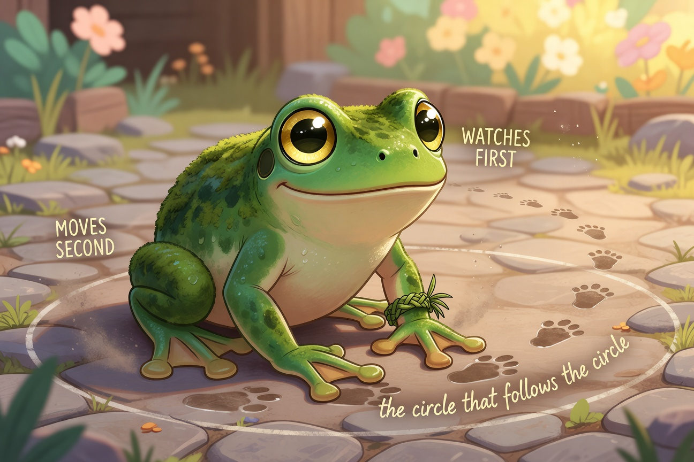
Fern
Ally
A moss-green tree frog whose careful nature makes her the most observant spotter in the troupe — once she learns that watching means moving, not freezing.
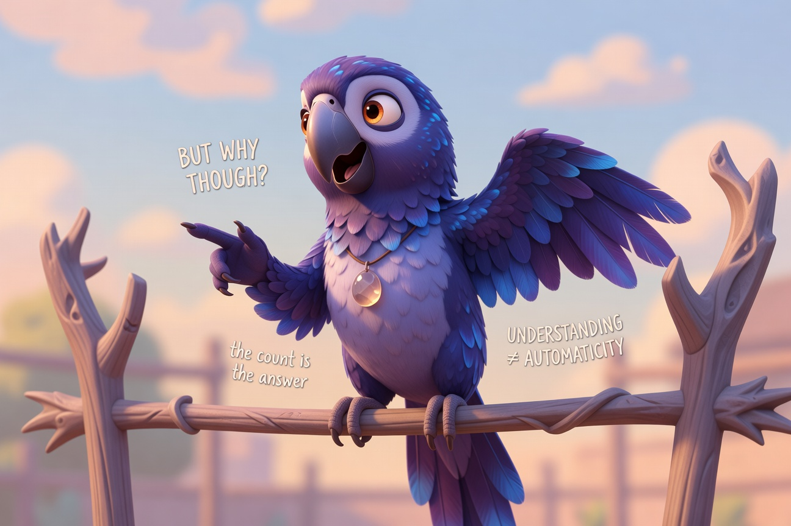
Riddle
Ally
A violet-streaked parrot who asks 'why' after every call and delays her response by questioning it — until she discovers that the count itself is the answer.
Dusty
Ally
A tawny wombat whose rocklike reliability makes him the troupe's anchor — and whose quiet fear of fire is the hidden cost of his steadiness.
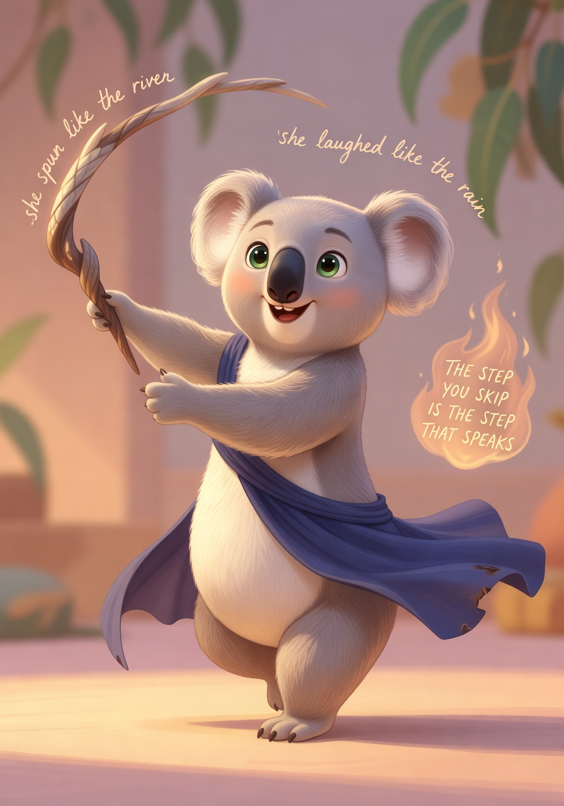
Laurel
Mentor
April's former teacher — a koala who spun like the river and laughed like the rain, whose singed sash and quiet grace after April's mistake became the foundation of everything April teaches.
🎧
Listen — Chapter 1
Chapter 1
The Dragon Wakes
The sun painted the square in amber and gold
as April the koala stepped out, calm and bold.
She balanced the staff on her rainbow-bright paws—
three unlit wicks waiting. She paused. (Not for applause.)
She stood in the center where chalk marked the ground,
a circle drawn wide with no gap to be found.
Her teaching apron was dusty with chalk at the hem,
and a scorch mark sat soft on the left pocket's seam.
THE DRAGON WAKESthree unlit wicks waitingShe paused. (Not for applause.)
Golden Arrival · Anticipation
Then out of the dusk came the friends she had called—
four voices, four bodies, four hearts un-appalled.
Mango the fruit bat swung down from a post,
her brass ankle-bell jingling. "I'm here! I'm the most
ready to learn what the dragon can do!
I'll spin it so fast that the sky will turn blue!"
Fern the tree frog crouched low on a barrel of moss,
her gold eyes wide open, her small fingers crossed.
She whispered, "I'll watch. I'll be still. I'll be near."
Her toe pads gripped tight to the rim of the tier.
Riddle the parrot cocked left on a signpost up high.
"But WHY does it burn? And how HOT? And how HIGH?"
Her violet wings lifted to punctuate each word,
her beak like a question mark shaped for a bird.
And Dusty the wombat sat square on the stone,
his wide paws pressed flat, every inch of him grown
into the cobbles as though he were part of the ground.
He nodded. He waited. He did not make a sound.
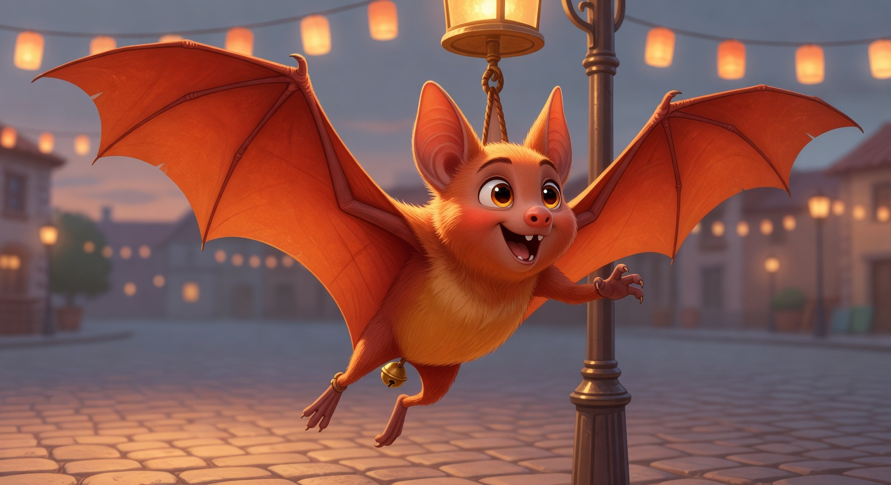
I'm here! I'm the MOST ready!wings before wordsMANGO
Mango Drops · Electric
April looked out at the four of them there
and lifted the staff to the warm evening air.
"You asked me to teach you," she called, bright and clear,
"and so I have come, and the dragon is here."
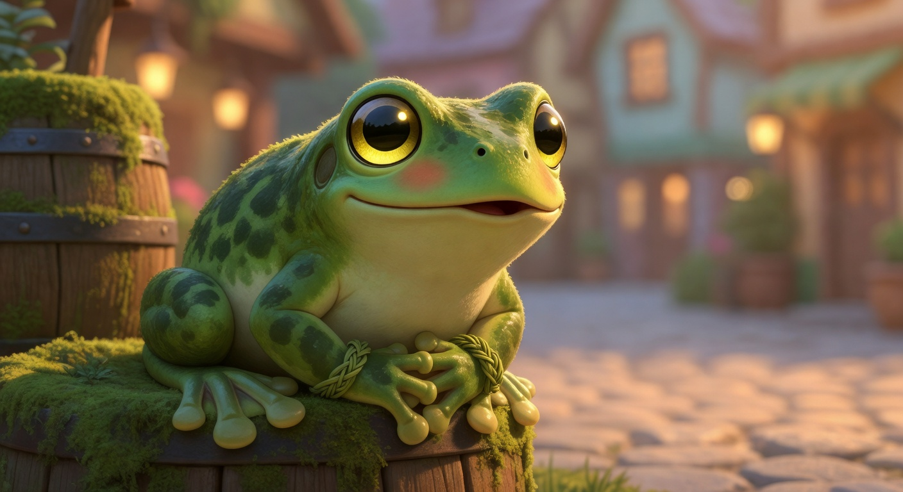
I'll watch. I'll be still. I'll be near.FERNtoe pads gripped tight
Fern Watches · Watchful
She tilted the staff so the wicks caught the light—
three dark little heads at the edge of the night.
"The dragon staff has three bright wicks," April sang,
and her voice crossed the square with a warm, ringing clang—
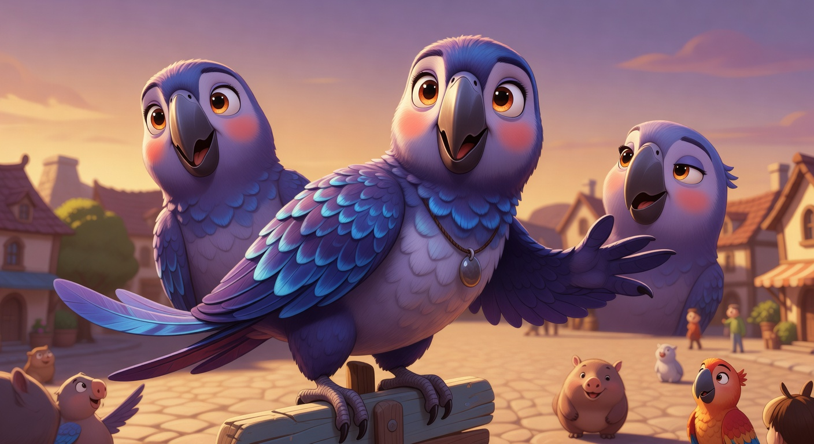
But WHY does it burn?And how HOT? And how HIGH?RIDDLE
Riddle Asks · Inquisitive
"And fire is not for careless tricks."
She held the staff steady. She let the line stick.
Mango's voice burst like a spark from a flint:
"We HEAR you, April, loud and true!"
Fern murmured beneath her: "We hear you."
Riddle called down: "Now teach us what the dragon can do!"
And Dusty just nodded. His eyes held it too.
"Then listen," said April, "and sing what I say.
I'll teach you the fire—but not fire today.
I'll teach you the FRAME that the fire sits inside,
the steps and the circle, the song and the guide.
"The fire AND the frame," April called to the four.
"You learn both together or don't learn at all."
The fire AND the frameYou learn both together or don't learn at allthree dark little heads at the edge of the night
April Calls · Declarative
The friends sang it back with a bright, easy roar:
"The fire AND the frame! We will learn them! We'll soar!"
They sang it like sunlight. They sang it like play.
They heard the word FIRE. The FRAME blew away.
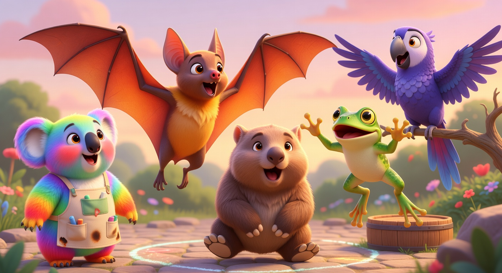
We will learn them! We'll SOAR!They sang it like sunlight.They heard the word FIRE. The FRAME blew away.
Chorus Roars · Exuberant
April smiled. Then she knelt by the chalk on the ground
and traced the white circle that swept all the way round.
"Step ONE," and she pressed both her paws to the rim.
"The safety circle. You step IN to begin.
"You draw it with chalk and you draw it with feet.
The circle says HERE is where dragon and dancer will meet.
No spinning outside it. No flame past its rim.
The circle holds you and you hold what's in him."
She stepped through the chalk line and into the ring.
"Now YOU," April called. "Step inside. Start to sing."
Fern leapt from the barrel and landed with care.
Dusty rose slow and walked steady from there.
Riddle swooped down from the signpost and lit
on the rim of the circle—then hopped to the bit
of chalk line that faced her. And Mango dropped last,
her wings folding in with a snap, bright and fast.
Step ONEThe safety circle — you step IN to begindraw it with chalk, draw it with feet
Circle Drawn · Reverent
Five bodies inside it. The circle drawn wide.
April turned once, saw each friend at her side.
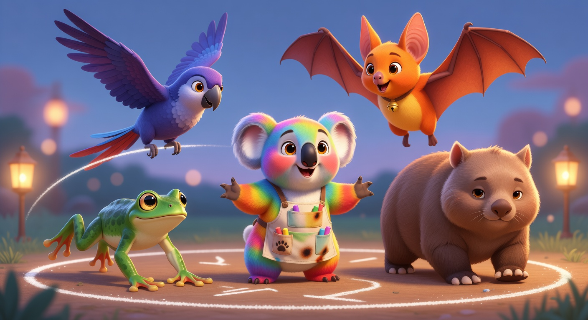
Five bodies inside itThe circle drawn widestep inside — start to sing
Stepping In · Gathering
"Step TWO," April called, and she lifted one paw.
"The spotter—the friend who stands watching for flaw.
The spotter does NOT spin. The spotter does NOT play.
The spotter stands ready and watches the way
the staff and the spinner move through the bright arc.
The spotter's the lantern that lights up the dark."
"But WHO is the spotter?" asked Riddle, beak wide.
"The friend," April answered, "who stands at your side.
The one with the wet towel—" She paused. Touched her chest.
Her fingers found the scorch mark. They lingered, then pressed.
Mango swung closer. "But why on the LEFT?
Why always the left for the towel and the rest?"
Step TWO — the spotterthe friend who stands watchingBut why on the LEFT?
Spotter Named · Intimate
April's paw stilled on the mark. Then she grinned.
"Because that's where the dragon looks first, little wind."
She said it like nothing. She said it like air.
But her fingers stayed pressed to the pocket right there.
The dusk had gone deeper. The lanterns were lit.
The chalk circle glowed where the five of them sit.
April stood tall and she lifted the staff to the sky—
the three unlit wicks caught the sunset up high
and blazed for a heartbeat in orange and red,
alive without fire, just the light overhead.
The friends held their breath. And the wicks seemed to stare
like three little dragons asleep in the air.
"Tomorrow," said April, "we learn what comes next."
She tucked the staff close. Touched the scorch mark. Then flexed
her paws, and she smiled at the four in the ring.
"Tomorrow we learn what the wet towel knows,
and why every dragon needs friends on its toes."
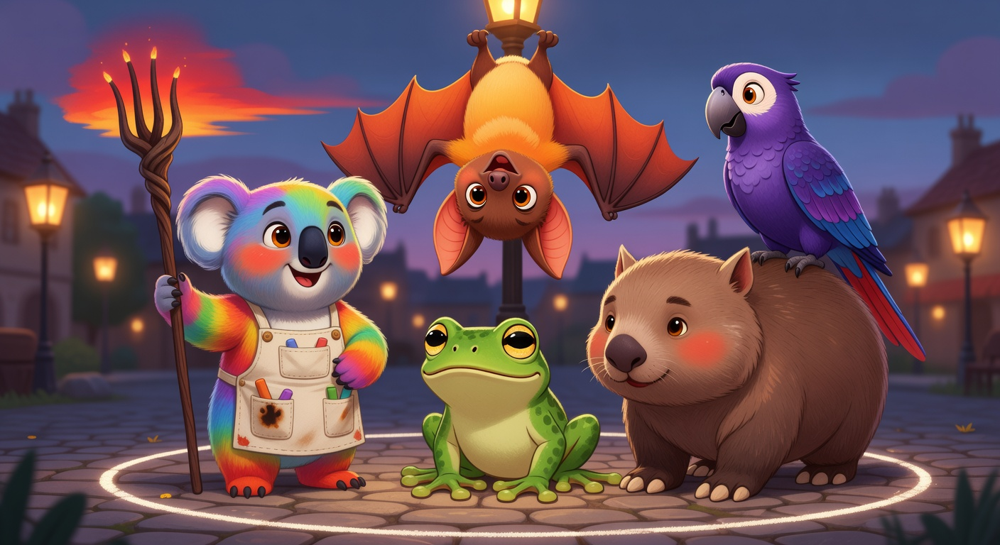
three little dragons asleep in the airTomorrow we learn what the wet towel knowsjust starting to wake from its sleep
Dragon Sleeps · Wonder
Mango's bell jingled. Fern's gold eyes went wide.
Riddle cocked left. Dusty breathed. And the five
stood together inside the chalk circle's white sweep—
five friends and a dragon just starting to wake from its sleep.
🎧
Listen — Chapter 2
Chapter 2
The Frame Takes Shape
The sun poured gold on the practice yard stones
where April knelt low in her teaching-apron bones.
The staff lay unlit on a table of oak,
and dew on the cobbles still glistened and smoked.
She'd set out two towels — both damp, folded tight —
on the left of the table, in reach, in the light.
the frame takes shapetwo towels, damp and folded tighton the left — always the left
Golden Setup · Reverent
The four friends came tumbling through morning's warm door:
Mango first, wings wide — she'd been up since before.
"I'm HERE and I'm READY! The dragon awaits!"
She swooped to the table and rattled the gates.
Fern landed in silence, one leap from the wall,
her gold eyes already surveying it all.
Then Riddle glide-dropped from the signpost next door,
her head tilting LEFT — then she tilted some more.
And Dusty came last at his Dusty-paced walk,
his wide paws set down like a mallet on chalk.
April smiled and she lifted the damp folded square.
"Come close, little troupe — there is craft in the air.
You learned the first two steps. Now sing them with me.
The circle, the spotter — let's hear all the three!"
"Draw the circle round, draw the circle complete!"
called April, and stamped with her orange-red feet.
"DRAW THE CIRCLE ROUND, DRAW THE CIRCLE COMPLETE!"
four voices came back like a drum and a beat.
I'm HERE and I'm READY!four friends through morning's warm doorDusty-paced walk
Tumbling Arrivals · Exuberant
"Choose your spotter true, choose the eyes that won't stray!"
called April, and pointed to Dusty's wide way.
DRAW THE CIRCLE ROUND, DRAW THE CIRCLE COMPLETE!CHOOSE YOUR SPOTTER TRUE!four voices like a drum and a beat
Echo Chorus · Rousing
"CHOOSE YOUR SPOTTER TRUE, CHOOSE THE EYES THAT WON'T STRAY!"
they echoed — and Mango was shouting hooray.
"Good," April said softly. "Now — step number three."
She lifted the towel for the troupe to see.
She folded it lengthwise, then folded again,
and wrapped it around her left paw, nice and plain.
"The wet towel sits ready, the wet towel waits near,
on the LEFT of the spotter — not there, children, HERE."
She held out her left paw. The towel was snug.
"It catches, it smothers, it wraps like a hug.
When the dragon breathes wider than anyone planned,
the towel is the answer that lives in your hand."
She passed the second towel down the line —
Fern folded it neatly, her fingers were fine.
Mango snatched it and flapped it like some kind of cape.
"I'll CATCH every ember! Not one will escape!"
Then Dusty received it. He held it. He tried.
But his paws kept it far — nearly two arm-lengths wide.
it catches, it smothers, it wraps like a hugon the LEFT of the spotternot there — HERE
Towel Lesson · Instructive
His elbows locked stiff and his shoulders crept high.
He stared at the towel like it might catch the sky.
I'll CATCH every ember!two arm-lengths wideApril watched, and said nothing, and gave him a nod
Towel Parade · Comic-tender
April watched, and said nothing, and gave him a nod.
She trusted his grip on the left-sided rod.
Then Riddle's beak opened — the question-bird spoke:
"But WHY does it sit on the LEFT, rainbow folk?
The right paw is stronger — at least, mine would be.
Why LEFT for the towel? Explain it to me!"
April touched — just a breath — at the mark on her chest,
the old faded scorch on the pocket's left breast.
Her paw brushed it lightly, then dropped to her side.
"Because that's where the dragon looks first," April replied.
"The staff swings in arcs and the arcs have a lean —
the left is the quarter most easily seen.
The spotter stands LEFT so the catch can be quick.
The towel waits LEFT — that's the rule, not a trick."
Riddle tilted her head — to the right, then the left.
She tapped at her stone like a bird on a cleft.
Then slowly she nodded. "The arc and the lean…
the LEFT is the quarter most easily seen."
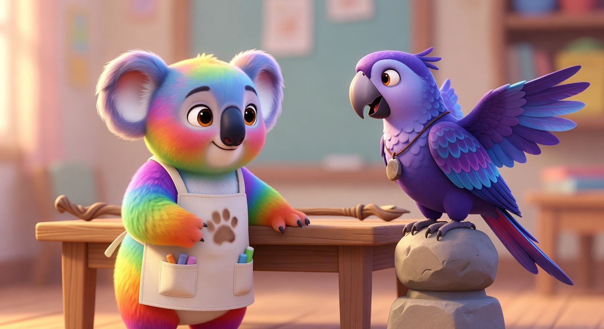
But WHY does it sit on the LEFT?the old faded scorch on the pocket's left breastbecause that's where the dragon looks first
Riddle Asks · Probing
"Now — step number four!" April called, standing tall.
She laid both her paws on the staff, seam and all.
"Before any spin and before any flame,
you trace every fold, every pocket and seam.
No trailing, no dangling, no loose bit of thread —
the pat-down makes sure that the dragon is fed
by the WICKS and the WICKS and the wicks — nothing more.
That's what the pat-down, the fourth step, is for."
Her paws traveled slowly from collar to hip,
down every seam-line, past button and clip.
Fern watched — and then mimicked, her small fingers light,
tracing her own arms from left side to right.
Mango was reaching already to try
on the staff — but she paused as the pat-down swept by.
She copied the motion, her wing-thumbs precise,
then added a flourish. "I did it! How NICE!"
Dusty patted his tool-belt, his chalk-pouch, his vest.
His paws moved like April's — slow, thorough, and pressed.
And Riddle traced feathers from shoulder to tail:
"But why every SEAM? What if one doesn't fail?"
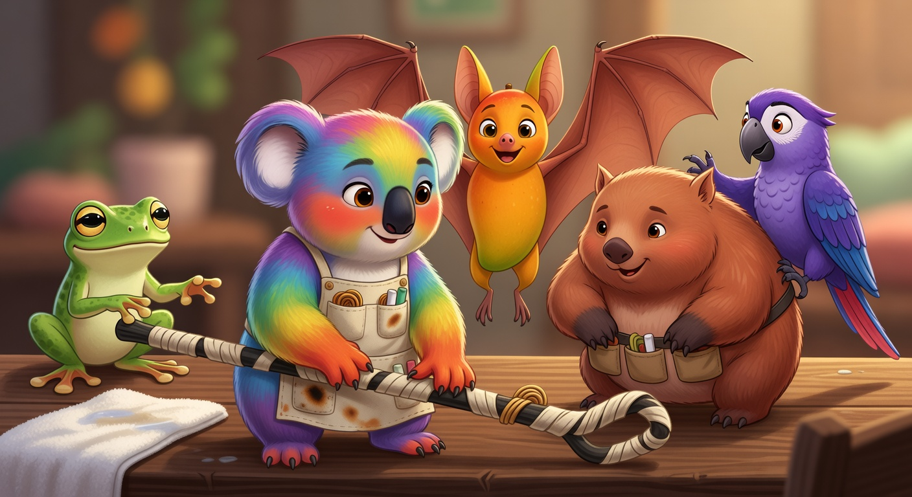
PAT DOWN EVERY SEAMno trailing, no dangling, no loose bit of threadthe one that you miss is the one the dragon will find
Pat-Down Demonstration · Methodical
"Because," April answered, "the one that you miss
is the one that the dragon will find with a kiss.
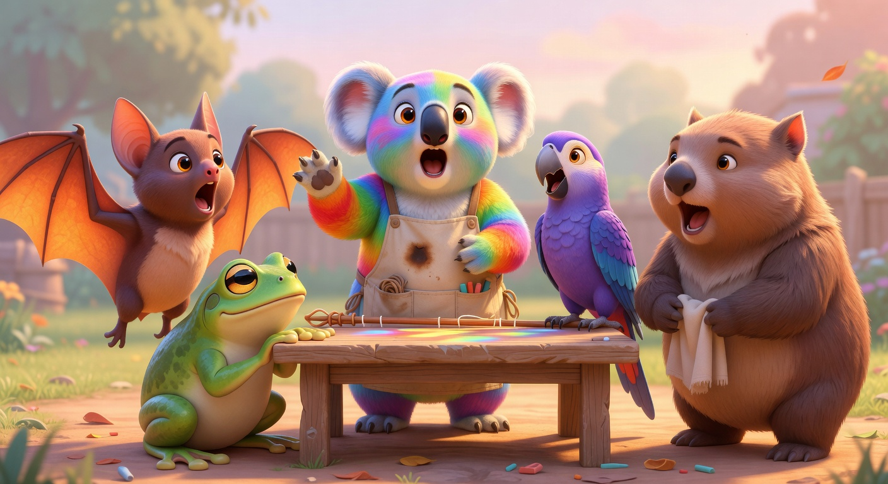
DRAW THE CIRCLE ROUND!LAY THE WET TOWEL LEFT!PAT DOWN EVERY SEAM — LET NO THREAD GO ASTRAY!the voices rang bright
Full Song · Triumphant
The pat-down's not fussy — the pat-down is SURE.
It checks what you think you already secure."
The troupe stood in morning light, circled and still.
April raised up one paw from the table's oak sill.
"Now sing it — all four steps — and sing them as one.
The fire AND the frame, from beginning to done!"
"DRAW THE CIRCLE ROUND, DRAW THE CIRCLE COMPLETE!
CHOOSE YOUR SPOTTER TRUE, CHOOSE THE EYES THAT WON'T STRAY!
LAY THE WET TOWEL LEFT WHERE THE CATCH IS MOST SWEET!
PAT DOWN EVERY SEAM — LET NO THREAD GO ASTRAY!"
The voices rang bright in the morning-washed square.
Mango was loudest. The fire filled the air —
but the FRAME part went quiet, a word barely heard,
like a bell rung too softly to land on a bird.
April listened. She nodded. She set down the staff.
Dusty still held his towel at arm-and-a-half.
Fern's fingers kept tracing the seams on her wrist.
Riddle tapped at her stone. Mango's wings gave a twist.
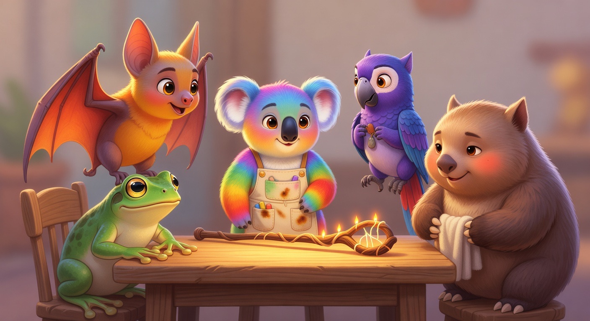
the hardest to learn is the easiest onetomorrowthe unlit wicks waited
Waiting Wicks · Anticipatory
"Two more steps and the song is near done," April said.
She looked at the wicks catching gold, amber, red.
"But the hardest to learn is the easiest one —
tomorrow we'll find it before the day's done."
The friends leaned in closer. The morning leaned too.
And the unlit wicks waited for what they might do.
🎧
Listen — Chapter 3
Chapter 3
Laurel's River
The fig tree leaned with its arms open wide,
and shade pooled like water on every green side.
The staff lay on April's lap, still and unlit,
and four pairs of eyes watched her, ready to sit.
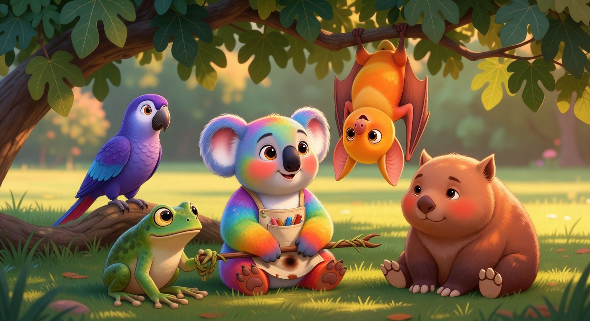
shade pooled like waterthe staff lay still and unlitfour pairs of eyesCHAPTER 3: LAUREL'S RIVER
Open Arms · Tranquil
"We've circled," said April, "we've spotted, we've shown
the wet towel, the pat-down — each step that you own.
But fire needs a body that's steady and slow,
so today we learn breathing before the wicks glow."
She lifted one paw and she pressed it down flat
on the front of her chest where her heartbeat was at.
"The breath count comes fifth — it's the stillness you keep.
Breathe IN for a three-count, as easy as sleep,
then OUT for a four-count, and out even more,
till the last of the air finds the edge of the door."
She breathed, and the afternoon shimmered and stilled,
and rings of pale gold from her lips slowly spilled —
soft circles that widened and rose through the shade,
each ring like a promise her lungs had just made.
"Now you," April called. "Let me hear the count ring.
Breathe in for a three-count — then out as you sing."
Four voices breathed in — and the fig leaves went hush —
then out came the four-count in one golden rush:
"We breathe in for three and we breathe out for four!
The count is the key that will guard every door!"
breathe IN for a three-countthe stillness you keepas easy as sleep
Heartbeat Paw · Intimate
The rings rose from Mango, from Riddle, from Fern,
and even from Dusty, whose rings were slow-burn —
broad circles that drifted like stones dropping low,
while Mango's spun upward in ring after ring-glow.
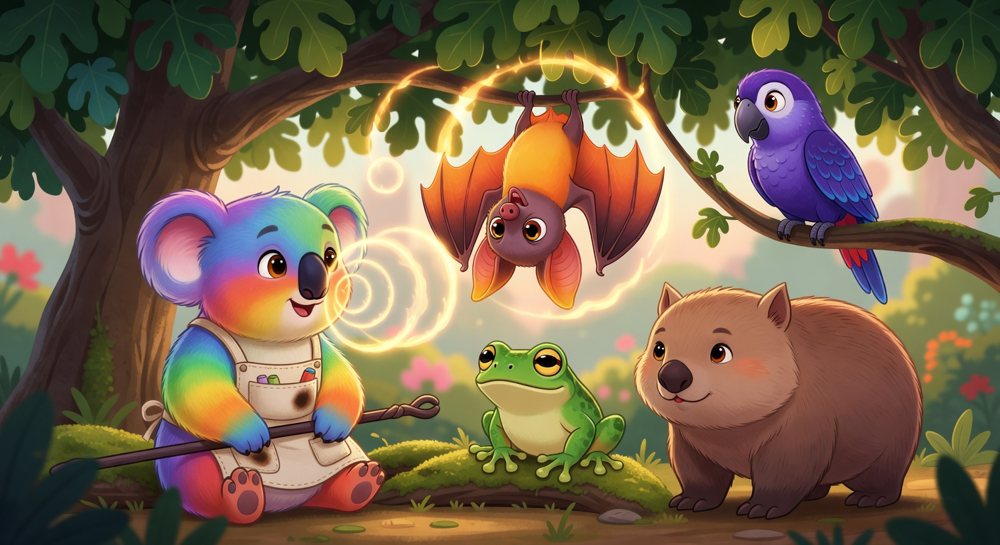
rings of pale goldeach ring like a promiseOUT for a four-count
Golden Rings · Magical
"Good!" April said, tapping the staff with her thumb.
"Now step six — the fuel-up — before the fire's come.
You dip every wick in the fuel, nice and neat,
then lift — and you wait — till the drip is complete.
Not too much, not little — the fuel has a line.
You fill to the edge and you stop at the sign."
She mimed the long dip with the staff tilting down,
her paws sure and level, her eyes on the crown
of each wick as she drew it up, steady and bright.
"The fuel-up means measure — not too much, not light."
"We dip and we lift and we wait for the line!"
cried Mango before the last word left the pine.
"We fill to the edge and we stop at the sign!"
Her voice was the first and the fastest to shine.
Riddle tilted her head, and her beak gave a tap
on the small polished stone at the cord on her strap.
"But why is it six and the breath count is five?
Why not breathe THEN fuel? Does the order survive?"
"The breath comes before so your hands will be still,"
said April. "Calm fingers won't shake, and won't spill.
The order's the frame — and the frame holds the fire."
She paused on the word like a plucked, ringing wire.
We breathe in for three!one golden rushMango's spun upward — Dusty's slow-burn
Four Voices · Joyful
"The fire AND the frame!" sang the friends, bright and high,
but the frame part flew past like a bird through the sky.
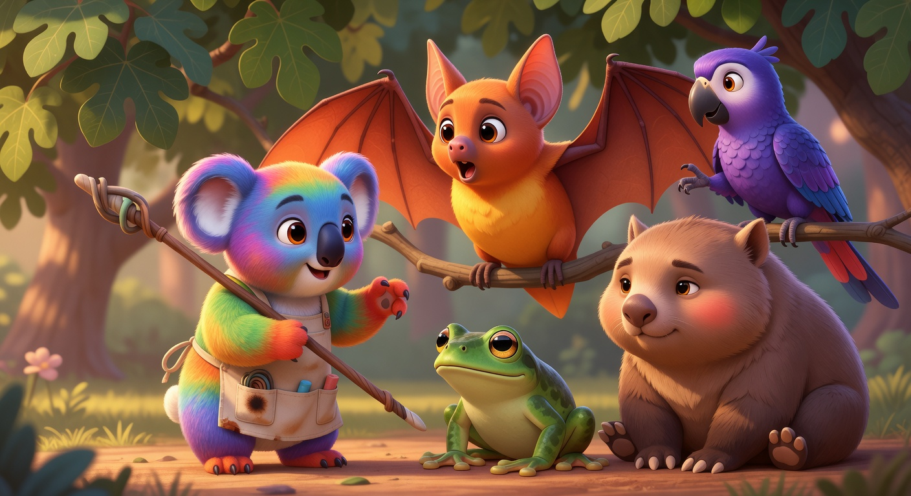
dip and lift and wait for the linenot too much, not littleSTEP SIX: THE FUEL-UP
Fuel Dip · Precise
April smiled — just halfway — and folded her paws.
"Now sing me the six steps. No stumbles. No pause."
And up came the voices, all tangled with sun:
"The circle is drawn and the safety's begun!
The spotter stands ready to follow the arc!
The wet towel waits, folded and damp, on the dark!
The pat-down checks close every pocket and seam!
We breathe in for three and breathe out like a stream!
We fuel every wick to the edge of the line —
six steps and we're steady! Six steps and we're fine!"
The refrain rang out through the yard and the leaves,
and the fig tree caught echoes like wind catching eaves.
Then Riddle said softly, her copper eyes keen,
"Who taught YOU the steps, April? Where have you been?"
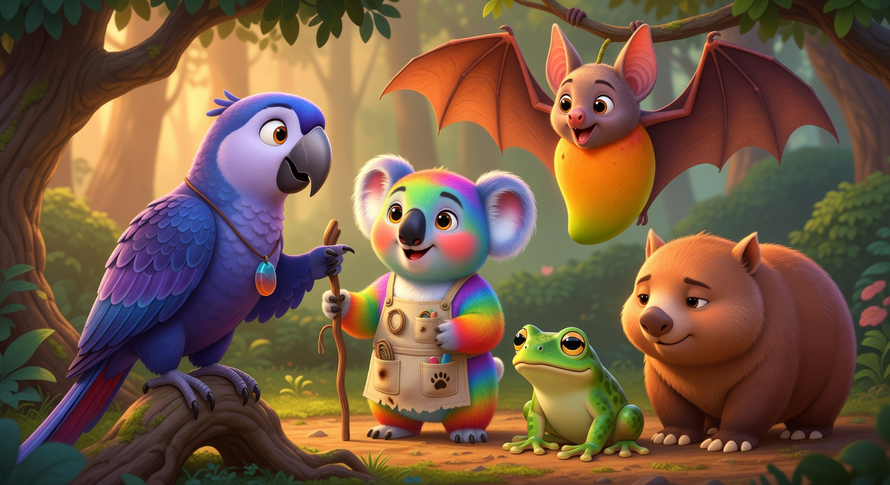
But WHY is it six and the breath count is five?Does the order survive?— tap tap tap —
Riddle Asks · Curious
The yard settled quiet. A warm breeze came through.
April's paw drifted down to the pocket she knew —
the left one, the pocket with scorch-mark and stain —
and she said, very softly, "Her name was Laurel-Jane.
The fire AND the framethe frame holds the firea plucked, ringing wire
Frame Holds · Resonant
She spun like the river. She laughed like the rain.
She taught me the dragon, she taught me the — "
And April stopped talking.
Her mouth stayed half-open, the couplet undone,
like a door left ajar with the light of the sun
still reaching inside but with no one to greet.
Her fingers pressed hard on the pocket's old heat.
"She taught you the EVERYTHING!" Mango burst in,
her wings spreading wide and her voice at full spin.
"She taught you the fire and the frame and the art,
and THAT'S why you teach it by — rhythm — and — heart!"
The rhyme wasn't April's. The line wasn't earned.
But Mango had filled it as fast as she'd learned.
The circle is drawn and the safety's begun!Six steps and we're steady!Six steps and we're fine!
Refrain Ring · Triumphant
Fern's golden eyes widened. She touched her own arm,
her small fingers circling the woven-grass charm.
She'd heard the stopped couplet. She'd felt the caught breath.
She said nothing at all — just sat still as a nest.
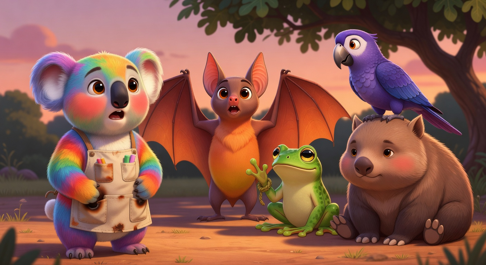
She taught me the dragon, she taught me the —a door left ajarHer name was Laurel-Jane
Stopped Couplet · Aching
Dusty's wide paws lay flat on his knees,
and Riddle's beak closed like a lock finding keys.
The fig tree breathed out, and the long shadows grew.
April blinked twice, and the halfway-smile drew
across her broad face like a curtain pulled thin.
"Well!" said the teacher. "Tomorrow we'll spin
the LAST step — the burn-off — the step before flight,
the step that stands guard at the edge of the light."
She stood, and the staff caught the sun's final gleam,
and the wicks at the tips seemed to flicker and dream.
Four friends watched her go with the staff on her back,
and the scorch mark glowed amber along the left track
of her apron, a small curling leaf in the dusk.
The air smelled of fig leaves and fuel-oil and musk.
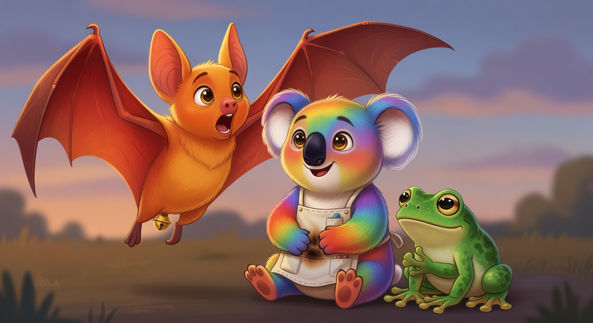
She taught you the EVERYTHING!the rhyme wasn't April'sthe line wasn't earned
Mango Fills · Bittersweet
And Mango said, quietly — almost — to Fern:
"She stopped in the middle. She had more to learn."
But Fern only touched her own arm, and was still,
and the half-finished couplet hung there — and hung — till
the last of the light slipped away through the yard,
and the six-step refrain hummed on, steady and starred.
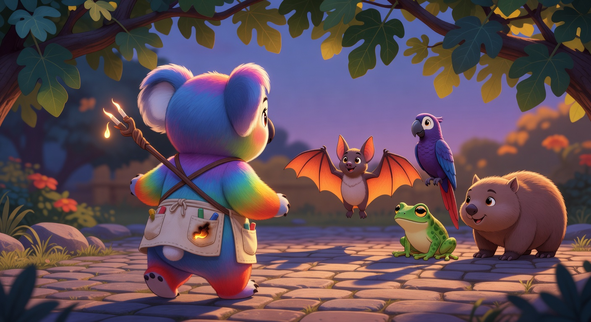
the half-finished couplet hung thereshe had more to learn— and hung — till the last of the light slipped away
Amber Track · Longing
🎧
Listen — Chapter 4
Chapter 4
Fern Finds Her Feet
The chalk circle gleamed in the early light,
and Fern crouched low at its edge, gripped tight.
Her toe pads pressed on the dusty stone.
Her golden eyes watched. Her breath was her own.
toe pads on dusty stoneher breath was her ownFERN
Circle Edge · Anticipation
April called out as the morning began:
"Now sing what you know — every step of the plan!"
And the friends lifted voices, all four in a ring,
and the six-step refrain was the song they would sing:
"We draw the circle, we call the spotter near,
we lay the wet towel on the left side here,
we pat ourselves down from our ears to our toes,
we breathe in for three and we breathe till it slows,
we fuel the wicks and we check every one —
six steps in the frame before fire is begun!"
The voices rang bright in the practice-yard air.
Mango's was loudest. Riddle's rose with care.
Dusty's was steady, a drum and a stone.
But Fern's voice arrived half a heartbeat postponed.
April set down the unlit staff with a nod
and said, "Today's lesson is strange — even odd.
The spotter does MORE than just stand there and see.
The spotter must FOLLOW. Now, Fern — watch me."
six steps in the frameFern's voice arrived half a heartbeat postponedTHE REFRAIN
Refrain Ring · Communal
She walked a slow arc round the chalk circle's rim,
her paws tracing ground as the light grew less dim.
"The spinner will turn and the staff will swing wide,
and the spotter must travel the opposite side.
Not frozen. Not planted. Not still as a tree —
the spotter must MOVE like the staff moves. Like me."
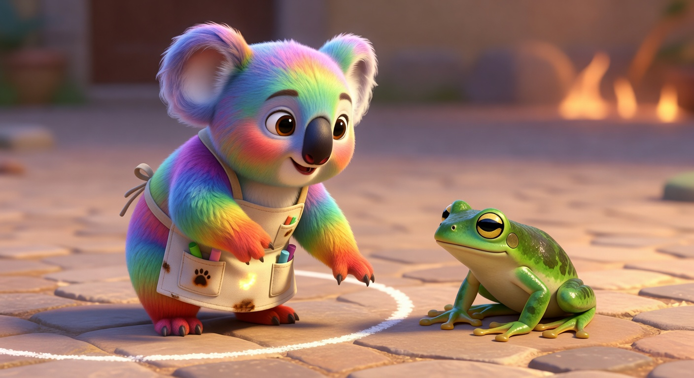
the spotter must MOVEnot frozen, not planted, not still as a treeFOLLOW
Spotter Arc · Instructive
Fern blinked. Her toes gripped the stone even more.
"I'll watch," Fern said softly. "I'll watch from the floor.
I'll see every wobble. I'll see every tilt.
I'll stand very still so that nothing gets spilt."
April knelt close, and her voice became low.
"But, Fern — if you're still and the spinner swings so" —
she swept her paw wide in a half-circle arc —
"then you're on the far side and lost in the dark.
A spotter who freezes is watching the flame
from three steps too distant to enter the game."
Fern touched her own arm, her green fingers light.
Her bracelet of grass twisted left, twisted right.
"But standing is SAFE," Fern began, and then stopped.
Her golden eyes widened. Her small shoulders dropped.
"You're right," April answered the thing Fern could see.
"Safe for the spotter is NOT safe for me.
The towel on the left needs a HAND on the towel,
and a hand needs a BODY that's close to the howl."
She touched the scorch mark on her apron, just once,
then stood and stepped back. Not a word. Not a bunce.
I'll go like a rivernot fast like a sparkthe gap opened wide
Mango Spins · Encouraging
Mango dropped down from the post where she'd hung
and lifted the unlit staff, balanced and swung.
"I'll spin it real slow — Fern, just follow my arc!
I'll go like a river, not fast like a spark!"
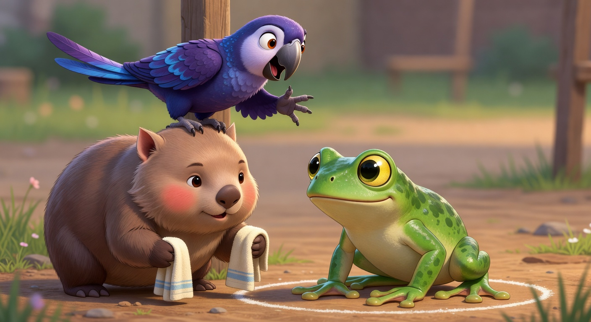
Oh. OH.the towel's intersectionthe catch is a team
Riddle Understands · Revelation
The staff began turning. The wicks caught the air.
Fern crouched at the edge with her wide golden stare.
One breath. And her feet didn't move. And the staff
swung round to the left — and Fern stayed on the aft.
The gap opened wide like a door swinging free.
The spotter was HERE and the spinner was THERE.
"Again!" April called, and the staff swung once more.
Fern's toes gripped the stone like they'd grip a wet shore.
But — something was different. Her left foot slid out.
A small wet print bloomed on the stone, round and stout.
Then her right foot came after, a half-step, a press.
A second print joined, and the gap became less.
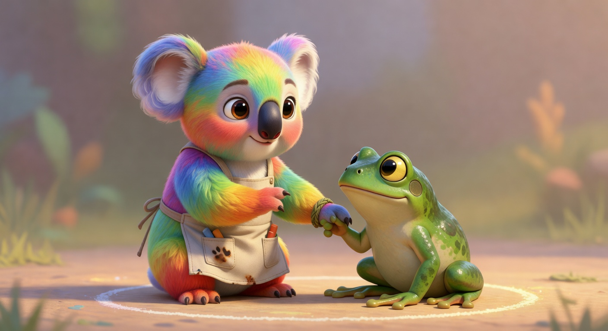
safe for the spotter is NOT safe for methe towel needs a HANDa hand needs a BODY
Frozen Fern · Vulnerable
The staff swung again and Fern followed its sweep.
Her steps were still careful, still cautious, still deep,
but now they were MOVING — a slow steady crawl
that mirrored the arc of the staff's rise and fall.
I step with the spinner, I follow the arcFern's voice was steadynot late anymore
Fern Sings · Triumphant
Riddle tilted her head from her perch on the post.
"But WHY must she move? Isn't watching the most —"
She stopped. Cocked her head the other direction.
"Oh. OH. It's about the towel's intersection."
"It's closer," said Dusty. He held up the towel —
the damp cream-white cloth with the blue stripe, the growl
of his low steady voice like a stone in a stream.
"If Fern is right THERE, then the catch is a team."
He stood to the left of the circle's chalk line,
the towel on his left paw, the fold crisp and fine.
Fern stepped again. And again. And the ground
told the story her feet made without any sound:
a ring of wet frog-prints, each one like a moon,
each spaced half a step, each arriving in tune
with the arc of the staff as it swung through the air —
a circle that followed the circle with care.
April watched from two paces back, and she smiled —
not the bright teaching grin but the smile of a child
who remembers the moment her own feet first knew
that the frame isn't something you WATCH — it's what you DO.
a small wet print bloomedthe gap became lessFIRST STEPS
First Steps · Breakthrough
"Now sing it," said April. "The spotter step. Sing."
a circle that followed the circleeach one like a moonthe frame isn't something you WATCH — it's what you DO
Moon Prints · Earned
Fern's voice came on time — like a bell, like a ring:
"I step with the spinner, I follow the arc,
I carry the catch from the light to the dark."
The friends sang the full six-step refrain once more,
and Fern's voice was steady — not late anymore:
"We draw the circle, we call the spotter near,
we lay the wet towel on the left side here,
we pat ourselves down from our ears to our toes,
we breathe in for three and we breathe till it slows,
we fuel the wicks and we check every one —
six steps in the frame before fire is begun!"
And Fern's feet kept stepping — she sang as she turned,
her prints on the ground like a language she'd learned.
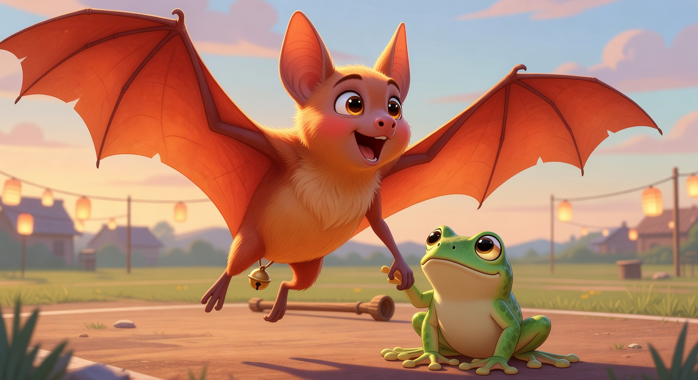
I'll spin it so fast that the STARS stop and stare!her bell rang in the airTHE SEED OF FORESHADOW
Mango Rising · Electric
Mango swung down from the staff with a flip
and landed beside her, all bounce at the hip.
"That footwork is BRILLIANT! That arc is a DREAM!
I can't wait for MY turn — we'll be SUCH a good team!
I'll spin it so fast that the STARS stop and stare!"
Her wings spread like sunset. Her bell rang in the air.
🎧
Listen — Chapter 5
Chapter 5
Riddle Counts the Why
Before any friend had crossed the yard,
April sat alone, and she held on hard
to the bag in her lap with its buckle undone,
her paw pressing something away from the sun.
A patch shaped like flame, stitched in amber and gold,
with letters so small and so carefully scrolled—
'The step you skip is the step that speaks'—
in a hand she had known now for years upon weeks.
The step you skip is the step that speaksbefore any friend had crossed the yarda hand she had known now for years upon weeks
Hidden Patch · Intimate
She traced every letter, then closed up the flap,
and set the bag down with a soft little snap,
and stood, and she smoothed out her apron with care,
the scorch mark still showing, still quietly there.
Then Mango swooped in with a jingle and shout,
and Fern's quiet footsteps came padding about,
and Dusty plodded steady across the warm ground,
and Riddle touched down without making a sound—
then tilted her head to the left and said, "Wait.
What step are we learning? And why is it great?"
April smiled and she lifted the staff to its posts,
two Y-shaped supports like a pair of tall ghosts.
"Today," April called, "we will learn how to BREATHE—
the breath count that holds you before the wicks seethe."
"Breathe IN for a count that goes one, two, three, four,
then OUT for a count and one beat even more.
The breath is the bridge from your mind to your paw—
it steadies the shake and it softens the jaw."
jingle and shout — quiet footsteps — steady ground — without a soundWhat step are we learning?And why is it great?
Four Arrivals · Energetic
Mango's voice rang like a bell through the air:
"Breathe in-two-three-four and breathe out! I'm THERE!"
the breath is the bridgefrom your mind to your pawSTEP FIVE
Breath Bridge · Instructive
Fern murmured it low with her toes on the ground:
"In… two… three… four… out…" like a river's soft sound.
Dusty drew breath and his wide shoulders squared.
"I breathe. And I hold. And I stand here. Prepared."
But Riddle cocked right, and her copper eyes burned.
"But WHY is it four? Why not five? What's been learned
by breathing before we pick up the bright staff?
The counting seems odd—is it whole or is't half?"
April's paws found her hips and she waited a beat.
"The count is the answer. Now breathe and repeat:
breathe IN for a count that goes one, two, three, four—"
"But what does it DO?" Riddle pressed even more.
Her wing shot straight up and her pendant swung free,
the polished stone tapping her beak restlessly.
I'm THERE!like a river's soft soundI breathe. And I hold. And I stand here. Prepared.
Three Responses · Varied
April called once again with her voice ringing bright:
"Breathe IN—let the air fill you up like the light—
then OUT for a count and one beat past the four,
and FEEL how your feet find the weight of the floor."
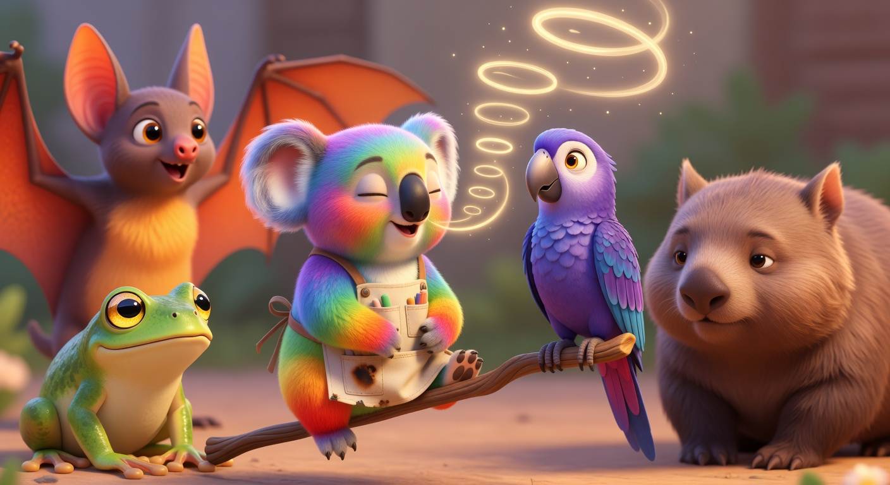
Don't answer me yetJust breathe when I breathecircles of light
Golden Rings · Reverent
Mango echoed it back in a rush and a spin.
Fern breathed it out soft with a frog-footed grin.
Dusty stood firm and his breath left his chest
in rings pale as silver that drifted due west.
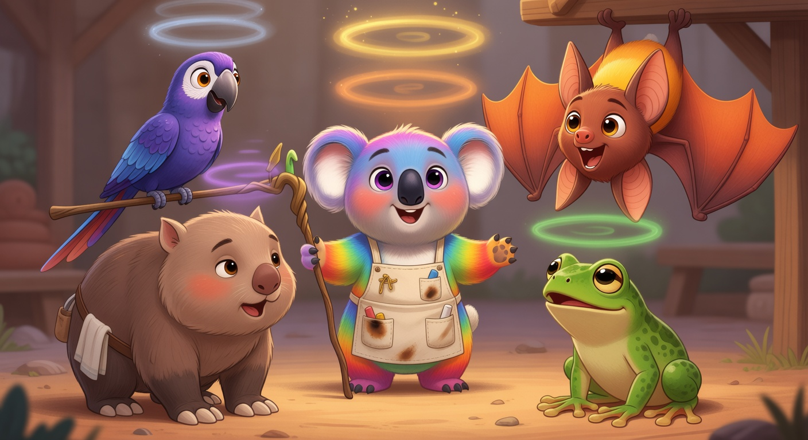
Draw the circle on steady ground!Breathe in-two-three-four, let it go!six steps ringing, one more to know
Five Voices · Triumphant
But Riddle's beak opened—and closed—and then turned.
"I hear what you're calling. I want what I've earned.
But how can I BREATHE when I still need to KNOW
what makes the count matter? What makes the count go?"
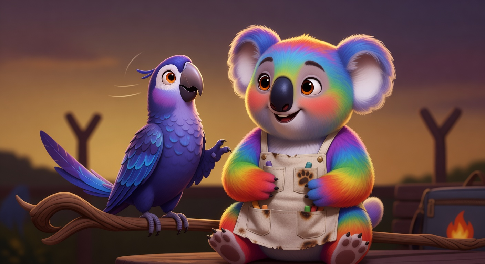
the fire AND the frameIs it something you hold?You're starting to see.
Frame Question · Mysterious
The yard settled quiet. A warm breeze blew through.
April stepped closer. "Then, Riddle—let's DO.
Don't answer me yet. Don't say why or say how.
Just breathe when I breathe. Can you try for me now?"
She drew in a breath—one, two, three, and then four—
and rings, pale as gold, floated up from her core.
She breathed the count out—one, two, three, four, and five—
and the rings drifted wide, and the air felt alive.
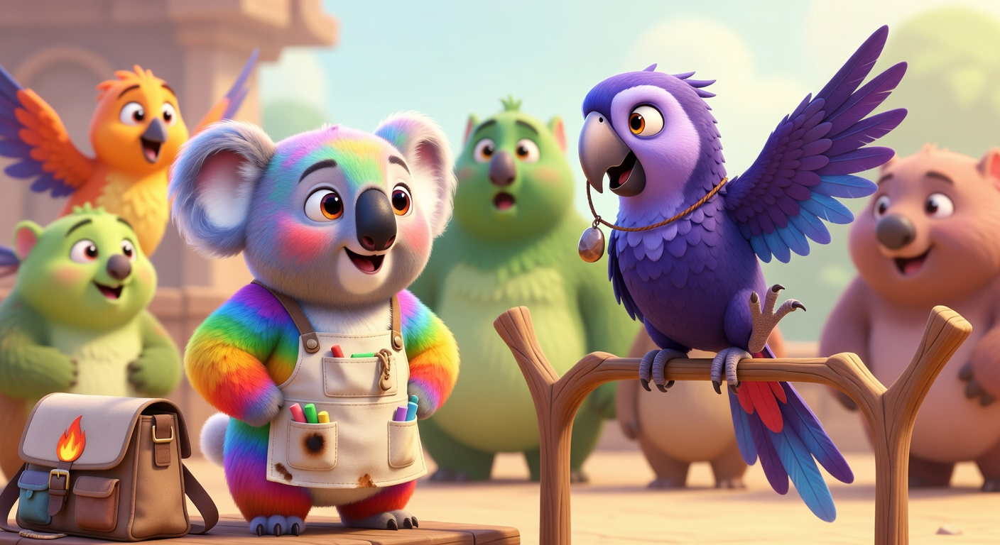
But WHY is it four?But what does it DO?the count is the answer
Why Pressed · Confrontational
Riddle watched them hang shining, those circles of light.
She opened her beak—but she closed it up tight.
She breathed in for one… and for two… and for three…
and four… and the air filled her chest like a tree
fills up with the wind on a slow autumn day,
and the questions she carried got quiet, not gone—
just quiet—just still—like a pause in a song.
She breathed out for one, two, three, four, and then five,
and rings, pale as violet, rose up and survived
the breeze and the doubt and the need to know why—
they shimmered and widened and climbed through the sky.
Her copper eyes blinked. And she tilted her head.
"Oh," Riddle said softly. Just "Oh," and she said
it not like a question, not sharp, not in haste—
but round like a ring, with the same kind of space.
April called out: "Now the count! All together!
Breathe IN—one-two-three-four—through all kinds of weather!"
And Riddle's voice landed—RIGHT there on the beat:
"Breathe OUT—one-two-three-four-FIVE—steady and sweet!"
Oh.not like a questionround like a ring, with the same kind of space
Violet Rings · Transcendent
Not early. Not late. Not with questions to chase.
The count was the answer. The rhythm, the place.
Her body had found what her mind couldn't prove:
the why lives inside when you let the count move.
They chanted the refrain, all five voices in round—
"Draw the circle on steady ground!
Call your spotter, eye to eye!
Wet towel ready on the left side!
Pat yourself from head to toe!
Breathe in-two-three-four, let it go!
Fuel the wicks and check the flow!"—
six steps ringing, one more to know.
Riddle perched on the resting staff, wings tucked in neat,
her pendant stone still, and her talons complete
around the smooth wood, and she tilted her head.
"But April—'the fire AND the frame'—what you've said
all week—I hear 'fire' and I know what it means.
But what is the 'frame'? Is it something one leans
against? Is it built? Is it something you hold?"
April's smile was a half-smile, warm amber and gold.
She touched the scorch mark on her apron and spoke:
"The frame is the thing that won't let the fire broke—"
She paused, and she grinned. "Won't let fire BREAK free.
You'll know it, dear Riddle. You're starting to see."
The sun tipped toward evening. The practice was through.
Riddle ruffled her feathers and turned with a coo
to Dusty, who stood with his towel on the left,
his wide paws still gripping, his breathing still deft.
the count is the answer, the count is the keyshow us the towel, brave Dustythe spotlight shifts
Dusty's Dare · Anticipatory
"The count is the answer, the count is the key—
now show us the towel, brave Dusty, show me!"
🎧
Listen — Chapter 6
Chapter 6
Dusty Holds Close
The sun hung low and the shadows grew long
as Dusty stepped into the circle's chalk song.
His paws pressed the cobblestones, steady and square,
his tool-belt sat heavy, the towel-loop bare.
The wet towel was folded on April's left side,
cream-white with a blue stripe, still damp, and still wide.
She held it to Dusty. He took it. He stood.
His grip on the fabric was firm — and too good.
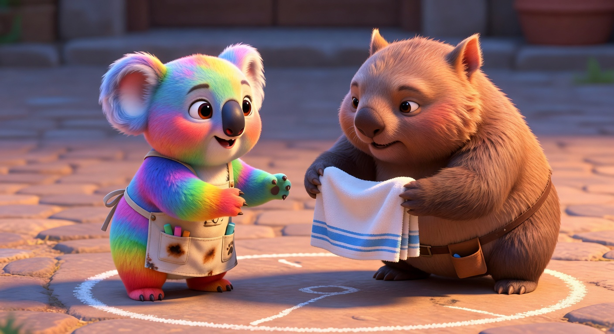
arm's lengththe body says NODUSTY HOLDS CLOSE
Arms Length · Tense
He held it at arm's length, as far as he could,
the way you hold nettles, or embers, or wood
that might still be burning. His shoulders were tight.
His voice, when it came, landed perfectly right:
"I'll hold it. I'll catch it. I'll stand where you say.
I'll fold it and place it the left-side-towel way."
The words were all perfect. The rhythm was true.
But April was watching the thing Dusty'd do —
his body leaned backward, away from the space
where fire would arc if the staff found its place.
She called: "Step inside to the two-spin-width mark —
close enough to catch, far enough for the arc.
Not an arm's length of distance, not over the rim —
two spins of the staff from the flame to your limb."
I'll hold it. I'll catch it.but his feet stood past the halftwo-spin-width mark
Perfect Words · Determined
And Dusty responded, "Two spins of the staff.
I'll stand at the mark." But he stood past the half —
his feet at the edge where the chalk circle blurred,
his paws saying something his voice hadn't heard.
she knew that lean backwardthe body says NO while the mouth says the graceFERN
Fern Recognizes · Recognition
Fern watched from the barrel. Her gold eyes went wide.
She'd seen that lean backward — she knew it inside.
She knew it the way she knew freezing in place:
the body says NO while the mouth says the grace.
She hopped from the barrel and landed beside him,
her wet little footprints a path she could guide him.
"I froze," Fern said softly. "My feet wouldn't go.
I stood like a stone when I needed to flow.
"But look —" and she stepped in a slow steady ring,
her toe-pads pressed down with each turn of the swing
as Riddle, perched high on the crossbeam, called out
the breath count to pace them: "In-two-three — and OUT."
The breath rings rose silver and soft from her beak,
four circles that widened and faded to streak.
And Dusty watched Fern as her footprints appeared —
a crescent of damp on the ground that she steered.
"You move WITH the spinner," Fern said, stepping near.
"Your feet are the answer. Your eyes lead you here."
She touched his broad forearm — one tap, nothing more —
the way she'd touch stone just to know what it's for.
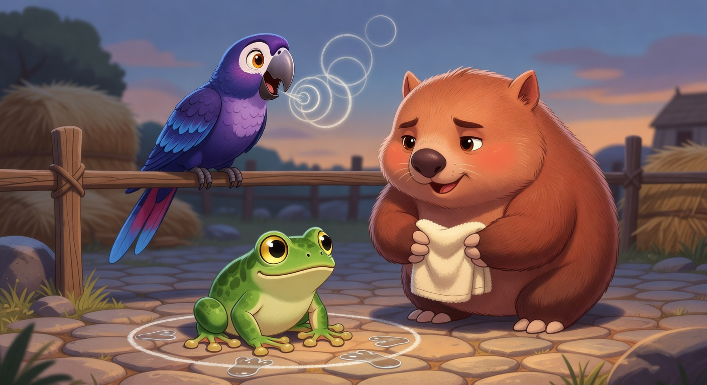
In-two-three — and OUTbreath ringsyour feet are the answer
Wet Footprints · Gentle
April stood quiet. She let the friends teach.
Her paw found the scorch mark. Her eyes held the reach
of something far off — like a river, like rain —
then back to the circle, the present, the plain.
one tap, nothing morethe cautious one teaching the steady one
One Tap · Tender
She called: "Now the staff makes its arc overhead.
The towel tracks the fire — not behind it, but led
by the eyes, not the fear. Hold the cloth where it's NEAR.
Two spin-widths. No farther. The catch happens here."
Mango swung the unlit staff over the ground
in a slow sweeping arc, and it made not a sound,
but Dusty's arms tightened. His shoulders crept high.
The towel drifted outward. His jaw set. His eye
stayed locked on the wick-tips — he tracked every turn —
but his body kept saying what words wouldn't learn:
I'm steady. I'm ready. I'll stand and I'll stay.
But the heat isn't HERE yet — and still I lean AWAY.
April stepped closer. Not teaching. Just there.
She spoke very softly, like breathing, like air:
"The fear doesn't leave, Dusty. Fear doesn't go.
It stays in your shoulders. You let it. You know.
April stood quietlike a river, like rainthe scorch mark
Scorch Silence · Haunted
"But the towel isn't armor. It isn't a wall.
The towel is a CATCH, and a catch means you fall
toward the place where the fire is. Into the space.
The fear comes along — but your HANDS set the pace."
He looked at the towel in his wide, cream-pale paws.
He looked at the circle. He swallowed. A pause.
Then Dusty stepped forward — one step, maybe two —
and pulled the damp cloth to his chest, and he drew
his elbows in close, and his shoulders dropped down,
and his small, dark eyes tracked the staff's wheeling crown
as Mango swung wider, and wider, and near,
and Dusty stood close to the arc — and stood clear.
Not far. Not at arm's length. Not over the rim.
Two spin-widths exactly. The fire could find him,
and he could find it. His paws didn't shake.
His fear was still there — but his hands were awake.
Fern grinned, and her toe-pads pressed down on the stone.
Riddle called from the crossbeam, "He's DOING it! — SHOWN,
not told, not explained, not debated or weighed —
but WHY does the fear help? — oh. Oh. Never mind."
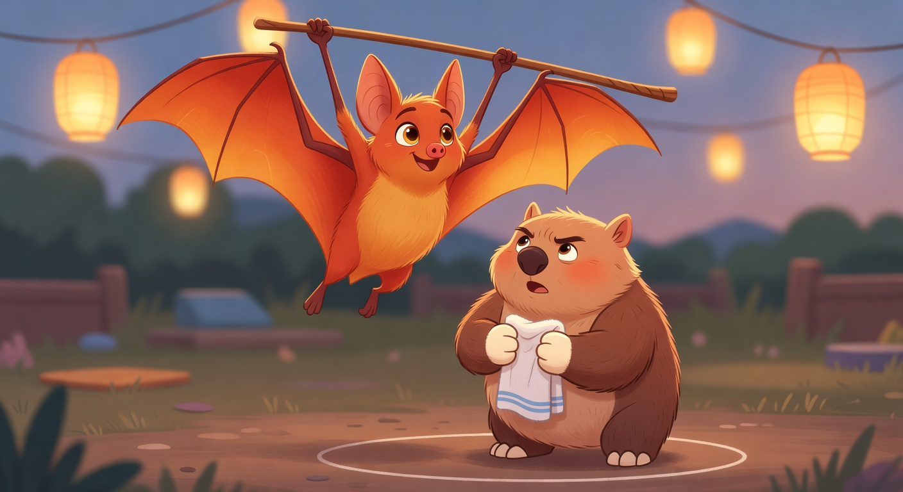
CLOSE, NOT FARtwo spin-widths exactlyhis hands were awake
Towel Close · Resolute
The lanterns were lit now. The twilight was gold.
The circle of bodies drew steady and bold —
Fern tracking, Dusty catching, Riddle on count,
and April just outside, her trust the full amount.
They chanted the refrain, their voices all strong:
"We draw the safe circle, we sing the safe song —
the SPOTTER steps close and the SPOTTER tracks true,
the WET TOWEL's on the left for the catching to do,
the PAT-DOWN checks everything, collar to shoe,
the BREATH COUNT is three in and four going through,
the FUEL-UP is measured — no more than we need."
Six steps. Six strong voices. One step still to seed.
And high on the branch, in the last lantern-light,
a sunset-orange fruit bat bounced left and bounced right.
Her bell gave a jingle. Her wings spread out wide.
Her voice rang like copper across the fireside:
"Tomorrow's MY chapter! The burn-off! The LAST!
I'll shake off the fuel and I'll spin something VAST!
I'll spin it so bright that the STARS hold their breath —"
Her wings caught the firelight. She laughed at the depth
We draw the safe circle, we sing the safe songsix steps, six strong voicesone step still to seed
Circle Steady · Unified
of the dark coming on, and she swung by one claw,
and April said nothing — but touched her left paw
to the pocket, the scorch mark, the old faded burn,
and watched the bat spin in the glow of the lantern.
Tomorrow's MY chapter!the stars hold their breathApril said nothing
Copper Bell · Foreboding
🎧
Listen — Chapter 7
Chapter 7
Mango's Bright Bow
The string lights swung in the evening air,
and Mango dropped from the beam up there.
She landed light on the practice ground,
her ankle bell making its jingle-sound,
her wings half-spread and her eyes alight—
"It's MY turn now! It's MY step tonight!"
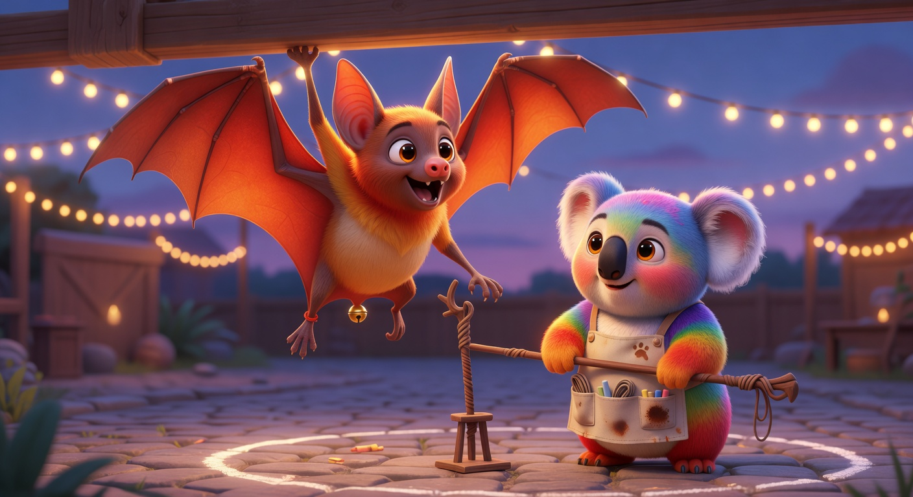
IT'S MY TURN NOW!the jingle before the landingMANGO
Swooping Entrance · Electric
April stood with the staff held wide,
the scorch mark soft on her apron's side.
She turned the wicks so the friends could see
three bundled ends, dark as bark on a tree.
"The last step, friends, before the spin—
the step that holds the dragon in.
When fuel soaks deep and the wicks drip wet,
there's more on the staff than the fire should get."
She gripped the shaft and she swung it low,
three sharp flicks in a steady row—
each flick a snap from the wrist, not the arm,
a shake that flings what could do you harm.
"Three flicks," called April, "quick and clean,
to shake the fuel that can't be seen.
The burn-off clears what the wick won't need—
the extra drop, the drip, the bleed."
Mango's voice rang before the call had gone:
"Three flicks! I've GOT it! Let me try it on!"
She snatched the staff with a swooping leap,
her grip already sure and deep.
three sharp flicks — wrist, not armthe drip you can't seeSTEP SEVEN
Burn-Off Lesson · Instructive
One flick—her wrist snapped quick and bright.
Two flicks—the dark wicks caught the light.
Three flicks—and Mango added MORE,
a sweep of wings she'd been saving for.
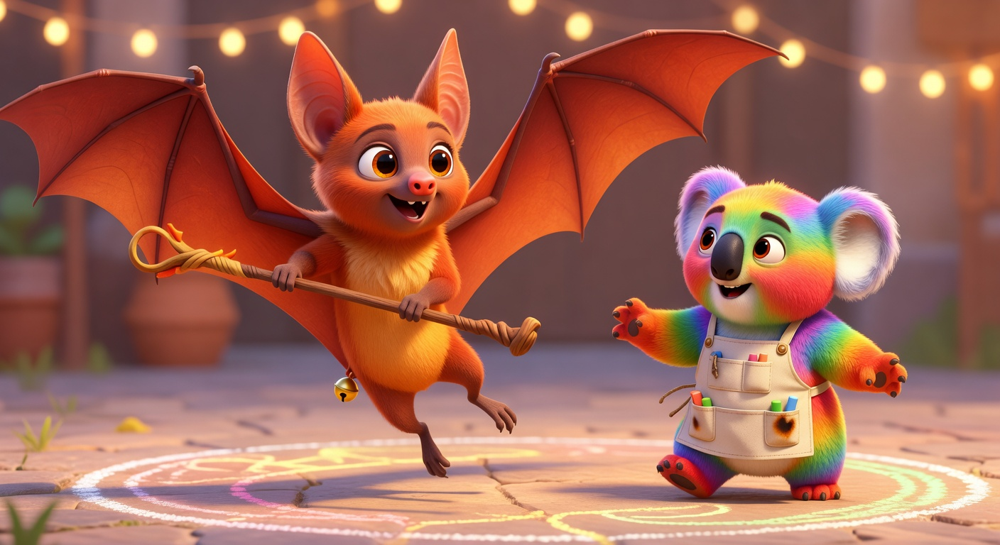
I've GOT it!the grab before the gripalready three moves ahead
Mango Snatches · Impulsive
She arced the staff in a dragon-wing spin,
then pulled it close and tucked it in,
then flung it wide with a flourish so grand
the bell on her ankle sang through the land.
Fern's golden eyes went round and wide.
"She made it FLY," the tree frog cried.
Riddle tilted her head to the right, then the left.
"That extra sweep—was that part of the step?"
Dusty stood with the towel held near,
its blue stripe damp on his left side, here,
his dark eyes tracking the arc she'd made.
He said, "She's fast." And his paws just stayed.
April watched from the circle's rim.
Her smile was proud. Her smile was slim.
Her fingers brushed at the pocket's mark,
that old soft burn, that curl of dark.
"Now all together," April called.
"The song is whole. No step forestalled.
From first to last, let the refrain ring—
I'll call each step, and you will sing."
she made it FLYthe extra sweep — was that part of the step?four flicks, not three
Dragon Wing Flourish · Dazzling
She drew a breath. The yard went still.
The string lights swayed on the evening's chill.
She's fast.CLOSE, NOT FARhis paws just stayed
Dusty Watches · Watchful
"Step in the circle, find your ground—"
"WE STEP INSIDE AND LOOK AROUND!"
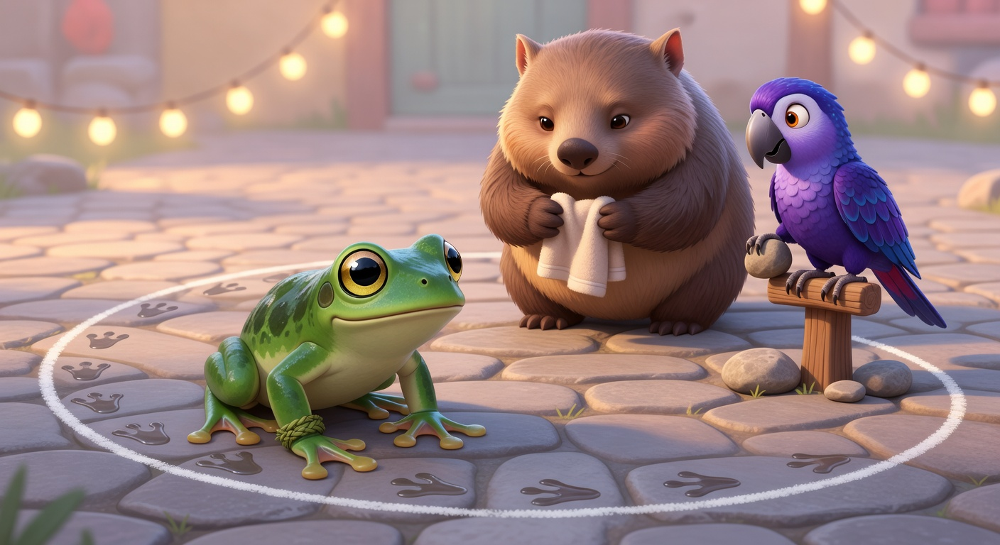
the circle following the circleeach pad-print pressedFERN
Spotter's Arc · Precise
"Name your spotter, know their place—"
"WE NAME OUR SPOTTER, FACE TO FACE!"
"Wet towel ready, folded left—"
"THE TOWEL IS NEAR, NO CATCH BEREFT!"
"Pat yourself from head to toe—"
"WE CHECK FOR LOOSE THINGS, HIGH AND LOW!"
"Breathe in for three and out for four—"
And Riddle sang it: "THE COUNT'S THE KEY THAT GUARDS THE DOOR!"
Soft rings of breath rose gold and bright,
four little clouds in the fading light.
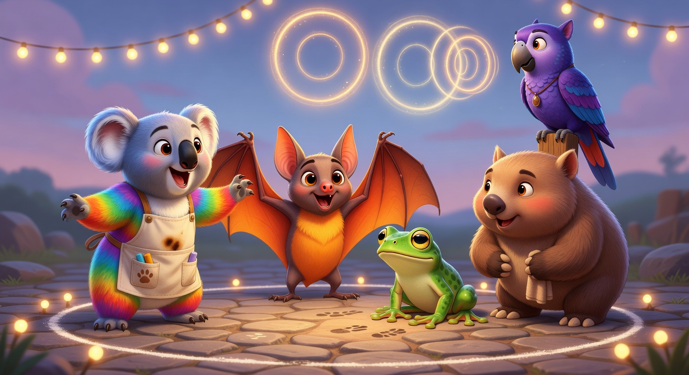
SEVEN STEPS ALIVETHE COUNT'S THE KEY THAT GUARDS THE DOORWE STEP INSIDE AND LOOK AROUNDbreath rings in the fading light
Full Refrain · Ceremonial
"Fuel the wicks and nothing more—"
"WE FUEL THE DRAGON, TIP, NOT POUR!"
"Three sharp flicks to clear the drip—"
"WE SHAKE THE BURN-OFF, WRIST, NOT HIP!"
The refrain rang through the practice square,
seven steps alive in the cooling air.
April nodded. "Now—full run. For real.
Show me everything your hands can feel."
Fern stepped into the spotter's arc,
her wet feet tracing through the dark,
each pad-print pressed in a curving line—
the circle-following-circle sign.
Dusty held the towel to his chest,
close and damp on his left, not pressed
at arm's length now but snug and near.
His breath was slow. His eyes were clear.
Riddle perched on the counting post
and tapped her stone—one, two—almost
three, then four, and the breath rings came,
each one a halo without a flame.
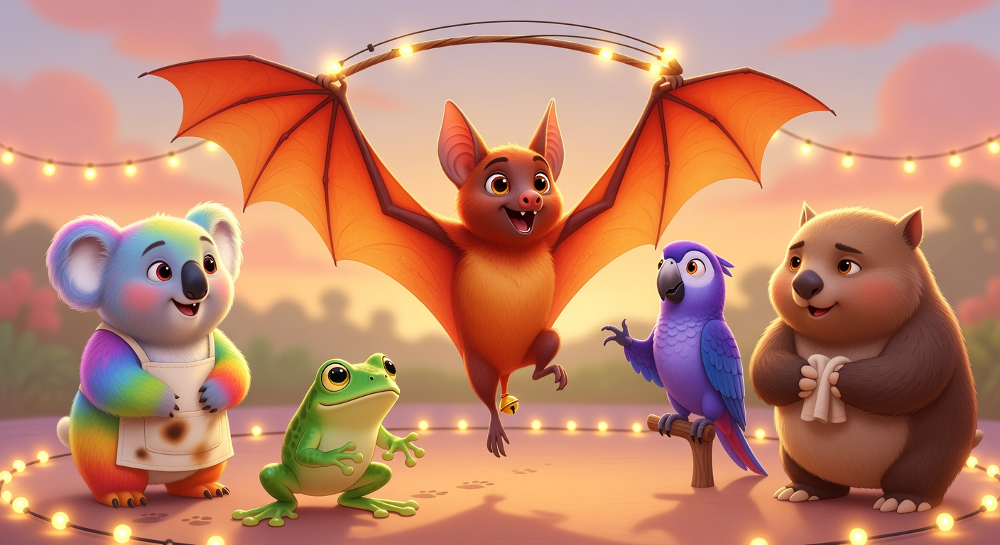
the unlit wicks looked like they could flyMANGO'S BRIGHT BOWproud — and watchfulthe dragon staff singing her name
Mango's Full Run · Triumphant
Mango stood at the center's heart.
She patted down from the very start—
shoulders, belly, ankles, wings,
checking clasps and cords and strings.
She breathed. She fueled. She gripped the staff.
She did the burn-off—and then she LAUGHED,
because the three flicks turned to four,
the dragon-wing sweep she'd done before,
a flourish wide as the evening sky
that made the unlit wicks look like they could fly.
The friends broke out in a cheer, a shout!
Fern's feet drummed on the ground about!
Riddle whistled a bright sharp trill!
Dusty stamped—and then stood still.
Mango swept the staff down low
and took a bow in the string-light glow,
her wings spread wide, her eyes like flame,
the dragon staff singing her bright, bright name.
April clapped. Her paw came down
to rest upon the pocket's brown,
that old soft mark where the dragon had looked.
Her eyes said something the smile had booked
but wouldn't deliver—not tonight.
She watched her student blaze with light.
tomorrow we light itthe wicks stayed darkWHERE THE DRAGON LOOKS FIRSTa spark rose and vanished like a falling leaf
Bright Foreshadow · Bittersweet
Mango straightened, tossed her chin.
The bell on her ankle flashed its grin.
"The steps are all sung and the dragon is ready—
tomorrow we light it. My paws will be steady!"
The string lights swayed. The wicks stayed dark.
Somewhere a lantern threw a spark
that rose and twisted, gold and brief,
and vanished like a falling leaf.
🎧
Listen — Chapter 8
Chapter 8
The Silent Echo
The lanterns are lit and the fire-town glows,
and every bright window is warm on its toes.
The festival hums with a drum and a flute,
and somebody's strumming a deep-bellied lute.
The chalk circle gleams in the flickering square,
and Mango's brass bell rings a note on the air.
THE LANTERNS ARE LIT AND THE FIRE-TOWN GLOWSthe chalk circle gleamsthree dark wicks
Festival Glow · Anticipation
Her wings are half-open, her eyes are alight —
the dragon staff's wicks will have FIRE tonight.
April steps forward, her apron pulled straight,
the scorch mark on the left in the lantern-light late.
She touches it once with the tips of her paw,
then lifts up her chin — and her voice has no flaw:
"The dragon staff has three bright wicks,
and fire is not for careless tricks."
The friends lean in close and the friends answer true:
"We hear you, April — teach us what to do!"
"Step INTO the circle and know where you stand."
"We step in the circle and here is my hand!"
she touches it onceSCORCH MEMORYher voice has no flaw
Scorch Touch · Solemn
"The spotter is watching — who watches tonight?"
Fern's golden eyes flash: "I will track every light."
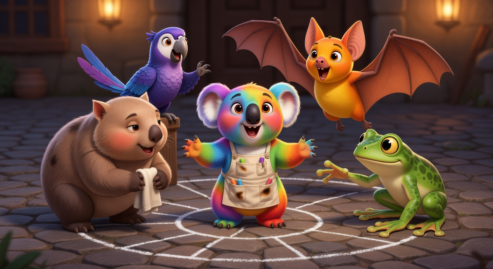
STEP INTO THE CIRCLE AND KNOW WHERE YOU STANDhere is my hand!the friends answer true
Circle Call · Unity
"The wet towel is ready — who holds it and where?"
Dusty steps left with the towel folded square:
"I hold it. I'm close. I can see the staff's arc.
Two spin-widths away, and I'll catch every spark."
"Now pat yourself down — every pocket and seam."
"We've patted and checked every fold and every hem!"
"Now breathe in for three —"
"— and we breathe out for four!"
And the breath rings drift upward like gold through a door.
"Now fuel up the wicks — just a dip, not a pour."
"We fuel up the wicks — just enough, nothing more!"
April pauses. She looks at the staff in the light.
The three wicks are glistening, ready and bright.
She calls the last step — and her voice holds it slow:
"Now shake off the extra before the fire can grow.
Three flicks from the wrist and the excess falls free —
the burn-off comes FIRST. Mango — answer me."
The night holds its breath. Not a bell. Not a sound.
Mango's wings are already mid-sweep off the ground.
She hasn't heard April. She hasn't replied.
Her mouth should be open — her mouth is closed wide.
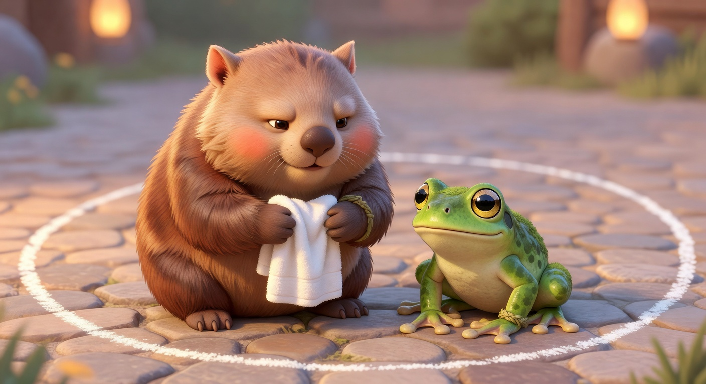
I hold it. I'm close.TWO SPIN-WIDTHS AWAYI will track every light
Towel Ready · Vigilance
The wicks catch the match and the dragon staff blooms,
and the fire trails behind her and swallows the room's
breathe in for threebreathe out for fourBREATH RINGSgold through a door
Breath Count · Reverent
careful edges — a drip of bright fuel leaves the wick,
and it kisses the grass with a gold-orange lick
right WHERE a pat-down hand was supposed to be,
and the flame fans out wider than anyone can see
is safe — it is NOT safe — the circle has cracked —
but the circle has FRIENDS, and the friends know how to act.
Fern reads the wobble in Mango's right wrist
before the flame answers — she's already mid-twist,
her wet frog-feet planted, her gold eyes locked on,
her body in motion before the thought's gone.
Dusty is there from two spin-widths, the left,
the towel held CLOSE and his breathing is deft —
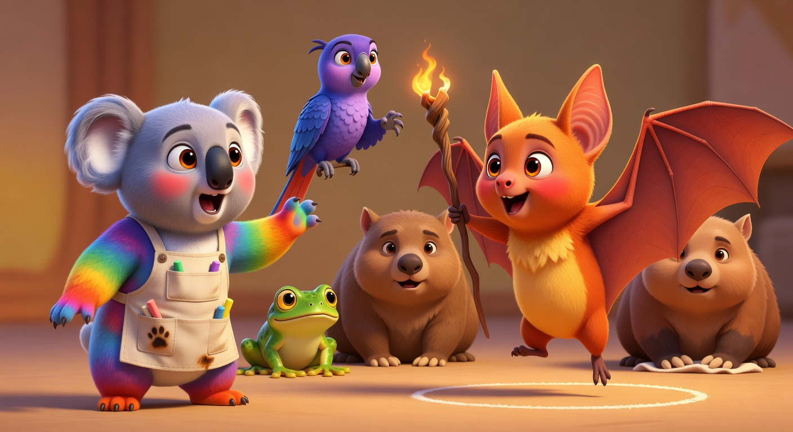
MANGO — ANSWER ME.the refrain is broken
Blank Echo · Dread
his paws do not flinch and his shoulders don't rise,
he smothers the flare with his calm steady eyes.
Riddle calls out from across the chalk ring —
no question, no "why" — just the count that can sing:
"Breathe in for three and breathe out for four!
The count is the answer! The count guards the door!"
And April — April is already THERE.
Her body crossed the circle through the smoke-scented air
in a pattern the friends have never been shown,
a pattern her paws and her muscle and bone
learned long, long ago from a teacher who spun
like the river, who laughed like the rain in the sun.
Her left paw finds the towel. Her right finds the staff.
She pulls the bright dragon back down to its half —
the wicks dim, the fuel-drip is caught on the fold,
and the fire goes gentle, and the fire does what it's told.
The circle is whole. Four bodies, drawn tight.
A diamond of friends in the festival night.
Fern on the right with her feet in the arc.
Dusty on the left with the towel, close and dark.
Riddle across with the count on her tongue.
April at center where the old pattern swung.
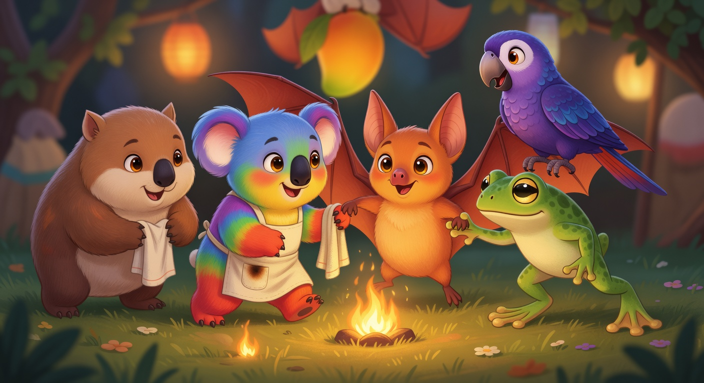
THE CIRCLE HAS FRIENDSbreathe in for three — breathe out for four!the count is the answera pattern her paws learned long ago
Flame Catch · Urgent
And Mango — Mango stands still in the ring,
her wings folded close, and she does not sing.
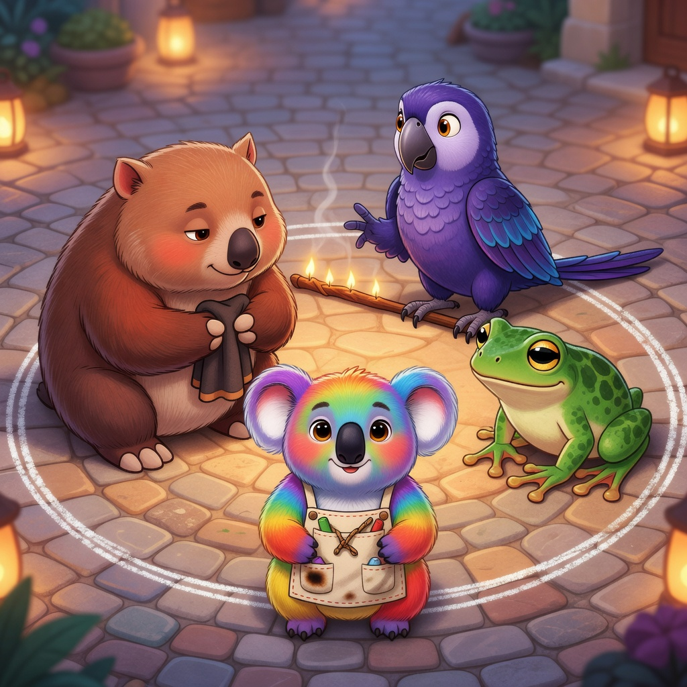
THE CIRCLE IS WHOLEfour bodies, drawn tighta diamond of friends
Diamond Whole · Relief
The brass bell on her ankle gives one little chime.
The wicks trail a whisper of smoke, and the time
stretches out like a breath that has nowhere to go.
No one is hurt. But every friend seems to know
that something was missing — a voice, and a line,
a couplet that should have come back to the rhyme.
Mango's enormous dark eyes do not blink.
She opens her mouth — and she closes — to think.
The fire-town is quiet. The drums have gone still.
A breath ring drifts upward from Riddle, until
it fades in the dark, and the dark closes in,
and nobody speaks, and nobody can begin
she does not singsmall as a stonethe smoke drifts alone
Folded Small · Devastation
to say what they're feeling — except for the sound
of Mango's wings folding, and folding, pulled round
her body so tight that she's small as a stone.
And the staff lies between them. And the smoke drifts alone.
🎧
Listen — Chapter 9
Chapter 9
The Patch Unsewn
The smoke curled up from the blackened wicks
like ghosts of all the careless tricks,
and five friends sat on the cobblestone ground
in a circle so tight it barely made sound.
The staff lay still in the circle's heart,
its three dark wicks like a finished art,
and nobody spoke and nobody stirred
and the night held its breath for the very first word.
the night held its breathfor the very first wordCIRCLE BODIES
Smoke Circle · Solemn
Then Mango's wings, folded close and small—
so tight they barely showed at all—
pulled in like a fruit bat holding the rain,
and she opened her mouth and she spoke through the pain.
"I skipped it," she said, and her voice was low,
not bright, not fast, not ready to go.
"The burn-off. The shake. The three-flick clear.
My mouth knew the words but my paws weren't here.
"I sang every step since the very first day.
I sang them so fast that they flew away.
My wings were already ahead of my hands—
my body forgot what my voice understands."
She stopped. And the silence sat down like a stone.
And Mango, for once, didn't fill it alone.
Then Fern's quiet voice, from her place on the ground,
came soft as a frog-print, barely a sound:
"I almost froze once. My feet wouldn't track.
I stood like a stone and I held myself back.
I thought being still was the same as being there—
but a spotter who's frozen is only a stare."
I skipped itmy body forgot what my voice understandsBURN-OFF — the step she dropped
Mango Confesses · Devastated
And Riddle leaned down from her perch on a post,
her head tilted left at the thing that mattered most:
"I questioned the count when the count was the key.
I asked and I asked and I asked—but you see,
my why came so late that the breath almost passed.
I understood everything—none of it fast."
soft as a frog-printa spotter who's frozen is only a stareSPOTTER — her step to learn
Fern Speaks · Vulnerable
And Dusty—broad Dusty, the towel on his knee,
still damp, still gripped close where a towel should be—
looked down at his paws and he said, plain and clear:
"I held it too far. I was shaking with fear.
I knew where to stand. I just couldn't stand close.
The heat was the part that I feared the most."
The circle sat still. Every friend had confessed.
Every voice had been small. Every voice had been blessed
by the others who listened, who nodded, who knew
that a step nearly skipped is a step you walk through.
Then April reached into her teaching bag's fold
and drew something out that her paw had long held—
a patch, shaped like flame, cut from amber-gold felt,
no bigger than what a small candle had dealt.
She held it face-up in her open right paw.
The friends leaned in close. And here's what they saw:
in stitches so tiny they might have been rain,
in Laurel's own hand, looping careful and plain—
my why came so lateBREATH COUNT — her step to holdI understood everything — none of it fast
Riddle's Count · Regretful
The step you skip is the step that speaks.
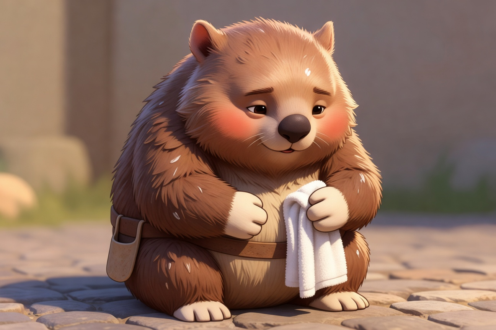
I held it too farWET TOWEL — his step to closethe heat was the part
Dusty's Distance · Honest
And April looked up, and her voice found the air,
slower and softer than anything there:
"I had a teacher. Her name was Laurel.
She spun like the river. She sang like the coral
that hums in the reef when the tide pulls through.
She taught me the fire. She taught me it true.
"But I was the fastest. I was the bright one.
I sang every step before step one was done.
One night—one real night—with the wicks all ablaze,
I skipped the pat-down in my hurry and haze.
"A trailing ember, no bigger than this"—
she touched the scorch mark with a feather-light kiss
of two quiet fingers against the old stain—
"caught Laurel's sash like a whisper of rain.
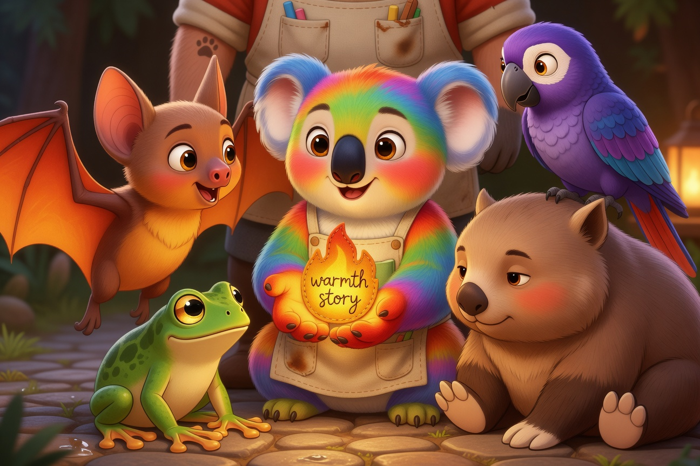
The step you skip is the step that speaksin Laurel's own handFLAME PATCH
Patch Revealed · Reverent
"Nobody was hurt. Just the sash was singed.
But I felt the distance. I felt how it hinged—
the space between knowing a thing in your head
and knowing it HERE"—and she touched her paws, spread—
"in the hands that must hold when the bright one is real.
That distance is something no voice makes you feel."
She paused. And the smoke from the wicks curled on.
And the lanterns glowed low. And the fear was not gone,
but it sat in the circle like one of the friends—
acknowledged, not hidden, not making amends.
"She didn't shout. Laurel looked at me clear.
She put out the singe. And she said, right here"—
April held up the patch—"just these words, and no more.
Then she kept on teaching. She opened the door.
"She gave me this patch on the day that I left.
I've carried it since like a thread in the weft
of everything—every wet towel, every call,
every circle I've drawn on the ground for you all."
Mango leaned forward. Her wing-tip, still tight,
touched the edge of the patch in the low lantern light.
Her eyes caught the glow and the glow caught her tears
and she said the first steady words spoken in years—
or so it felt, in that circle, that night:
"Sew it on the towel. Where we all see it right.
On the left side. The side where the dragon looks first.
So the step that we skip is the step we've rehearsed."
she spun like the rivershe laughed like the rainLAUREL — the teacher before
Laurel's Spin · Luminous
April looked at her friends—at the circle drawn tight,
at the bodies that held in the low lantern light.
"The fire AND the frame," she said, soft as a bell.
"I promised to teach you. Now hear what I tell:
the distance between knowing and holdingSCORCH MEMORYa trailing ember, no bigger than this
Ember Kiss · Intimate
"The fire is the dragon—the bright one, the bold.
The frame is the ritual—the circle you hold.
The frame is the towel and the count and the clear.
The frame is the reason the fire can come near.
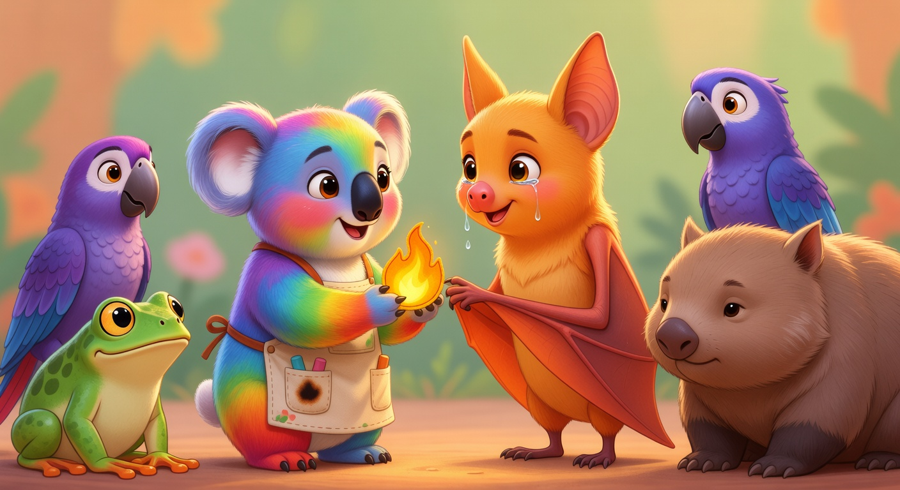
sew it on the towelwhere we all see it rightTHE LEFT SIDE — where the dragon looks first
Wing Touch · Tender
"I built it from distance. From Laurel. From shame.
I built you the frame so you'd dance with the flame."
And Fern's golden eyes in the low-lantern gleam
looked down at the towel with its left-side seam,
and Riddle said softly—no question, no why—
"Then tomorrow we sew it. And tomorrow we try."
And Dusty said nothing. He folded the towel.
He pressed it to the left of his chest with a scowl
that wasn't a scowl—it was something like grace—
and he held it right there, in the catching-place.
THE FIRE AND THE FRAMEthe frame is the reason the fire can come nearI built it from distance. From Laurel. From shame.
Fire And Frame · Resolute
The smoke rose. The lanterns burned low on their wicks.
The staff lay between them like bridges, not tricks.
And somewhere inside every chest, every bone,
the refrain was rebuilding—not April's alone.
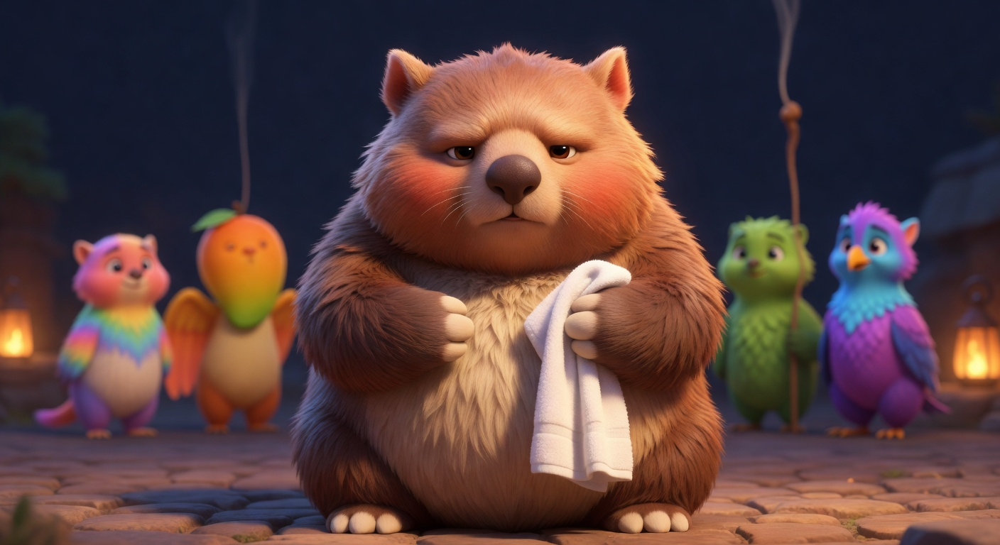
the catching-placethe refrain was rebuildingnot April's alone
Towel Held Close · Grace
🎧
Listen — Chapter 10
Chapter 10
The Reversed Chorus
The sun climbed slow through a peach-colored sky
and painted the fire circle gold, warm, and dry.
The wicks had been trimmed and the fuel had been poured,
the staff lay on sawhorses, steady as a board.
But nobody rushed and nobody ran—
they stood at the edge where the chalk circle began.
the needle in the sunTHE STEP YOU SKIP IS THE STEP THAT SPEAKSsewn where every paw can read it
Stitched Words · Reverent
A needle glowed bright in the early-day sun
as Mango pulled thread through the wet towel's weave—done.
She knotted the last of the stitches in place:
the flame patch lay open for all eyes to trace.
"The step you skip is the step that speaks"—
sewn left of the blue stripe in Laurel's techniques,
in amber-felt thread on the cream-colored fold,
where everyone's paws and everyone's hold
could read it, could feel it, could carry the phrase
not hidden in bags through the teaching-long days.
Then Fern took a breath. And she stepped to the ring.
She opened her mouth. And she started to sing.
"Step INTO the circle and draw it with chalk—
the circle's the frame and the frame is the walk."
Her voice was not loud but it carried the beat,
and Dusty came forward on wide, steady feet.
"I hear you," said Dusty. "I'll draw it with care.
The circle holds ALL of us. I will be there."
Step INTO the circleher voice was not loud but it carried the beatFERN CALLS FIRST
First Call · Brave
He knelt with the chalk and he pulled the line round,
his paw pressing even and firm to the ground.
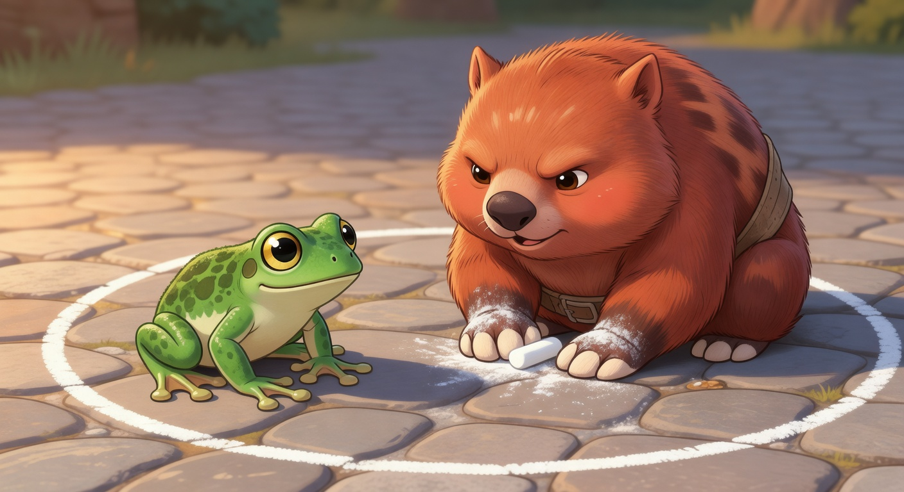
I'll draw it with carethe circle holds ALL of uschalk dust on cream palms
Chalk Drawn · Grounded
Then Fern called to Dusty—her golden eyes bright—
"Now NAME me the spotter who stands to the right."
And Dusty stood up with the chalk dust still white
on his cream-colored palms, and he answered her right:
"The spotter is Fern and she moves with the spin.
Her feet track the arc. Let the dragon begin."
Then Dusty called Fern, and his low voice was clear:
"The WET TOWEL is folded and held to the left here."
And Fern's fingers lifted the towel from the stump—
she held it left-close with a soft little thump
against her own chest, and she called the words back:
"I'll hold it. I'll fold it. I'll follow the track."
Then Riddle leaned down from her perch on the post,
her copper eyes steady—no question, almost—
and called to them all with a musical ring:
"The PAT-DOWN comes next. Check the seam and the string."
She ran her own wing down each feathered edge twice,
and Mango called back—and her voice was precise:
"I'll check every fold and I'll smooth every thread.
The pat-down is done before fire is fed."
The WET TOWEL is folded and held to the leftI'll hold it. I'll fold it.LEFT-SIDE ALWAYS
Towel Close · Steady
Then Riddle tipped left in her listening tilt
and called the fifth step like a song she had built:
BREATHE IN for three, breathe OUT for fourthe count floated upward and over the hillfour golden rings
Breath Rings · Transcendent
"Now BREATHE IN for three and breathe OUT for four—
the count is the key that will open the door."
And rings rose like gold from her beak to the sky—
four luminous circles that drifted up high.
The friends breathed together. The morning went still.
The count floated upward and over the hill.
Then Dusty called out, and his voice held the ground:
"The FUEL-UP is measured—not over, not drowned."
And Riddle responded, her head cocking right:
"Just enough for the dragon. Just enough for the light."
And then came the step. And the circle went quiet.
The morning birds sang through the hush of the riot
that yesterday left in each heart, in each chest—
and Mango unfolded her wings from their rest.
She stood on the ground—not a branch, not a rail—
her feet on the chalk line, her bell on her tail.
The BURN-OFF comes lasteach syllable steady, each syllable lownot a branch, not a rail — the ground
Mango Grounded · Transformed
She opened her mouth. And the words came out slow.
Each syllable steady. Each syllable low.
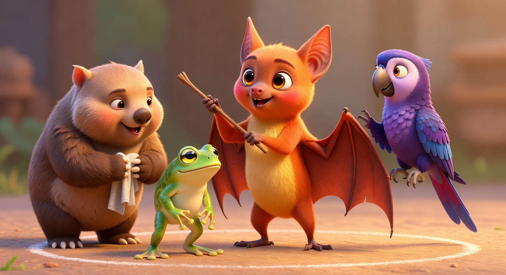
one, two, and then threeeach motion deliberate, patient, and freeTHE CIRCLE OF BODIES
Three Flicks · Precise
"The BURN-OFF comes last—three sharp flicks of the wrist.
You shake off the extra. No step can be missed."
Her voice filled the space where the silence had been.
Her paws held the air where the blank page was seen.
She flicked the unlit staff—one, two, and then three—
each motion deliberate, patient, and free.
And Fern sang it back, and then Riddle sang too,
and Dusty's low rumble came rolling on through:
"We hear you, brave Mango. We hear every word.
The burn-off is sung and the burn-off is heard."
Then April stepped forward. She lifted the flame.
She touched it to each of the wicks, and they came
alive with a whisper, alive with a glow—
the dragon woke gently, woke steady and slow.
And Mango received it with both paws held wide,
the staff balanced even, the flame on each side.
She breathed in for three and breathed out for four.
She shook the wicks clean—and she shook them once more.
Then Fern's mossy feet traced the arc on the ground.
Then Dusty held close, with the towel tightly wound.
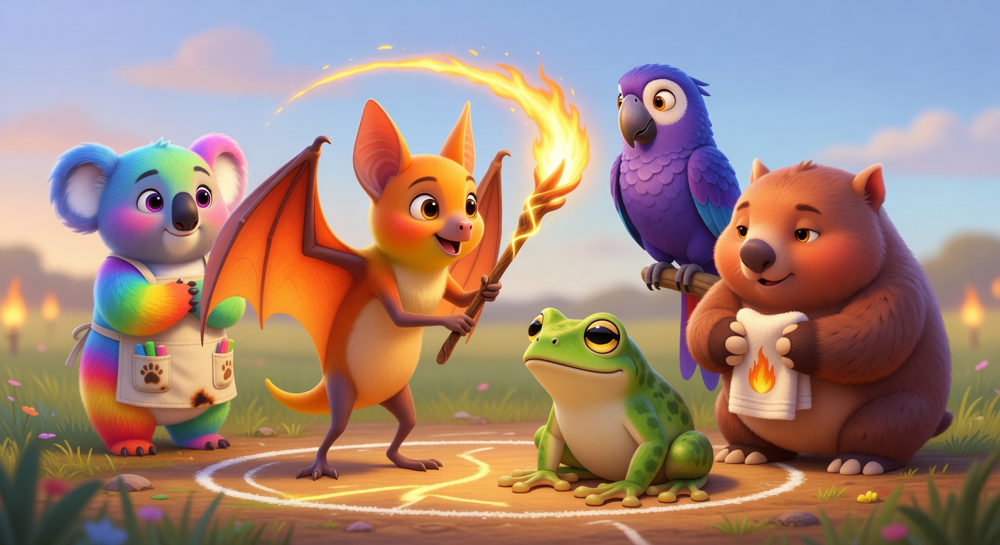
the dragon woke gently, woke steady and slowWING-SHAPES IN GOLDthe frame is now yours
Dragon Wakes · Triumphant
Then Riddle called out every beat of the count.
And Mango began—and the fire was the fount
of wing-shapes that bloomed in the clear morning air,
not racing, not rushing, but placed there with care.
The dragon-wing pattern unfolded in gold.
The circle of bodies—together—took hold.
And then, when the last of the flame-trails went wide,
the four friends stood still at the circle's chalk side.
They turned to face April. They opened the call.
Four voices together. One couplet. For all:
"The dragon staff has three bright wicks,
and fire is not for careless tricks."
April's paw found the mark on her apron—and stayed.
Her eyes filled with light that the morning had made.
She answered them back, and her voice held the rain
of Laurel, the river, the old sweet refrain:
"I hear you, dear friends. I can hear that it's true.
The frame is now yours—and the fire is too."
fire is not for careless tricksI hear you, dear friendsTHE FRAME IS NOW YOURS — AND THE FIRE IS TOO
Reversed Call · Sacred
The staff cooled. The smoke curled. The chalk circle gleamed.
The towel on the left held the words Laurel dreamed.
the dragon breathed softlyand found its own place— together —
Dragon Rests · Peace
And there in the morning, with sun on each face,
the dragon breathed softly—
and found its own place.
The Safety Ritual — for parents
April teaches her friends a seven-step ritual. The book sings it through; here it is plain, in order, for parents who want to talk about it with their kids — or for kids who want to make their own ritual for any skill that matters.
The Safety Circle. Draw it. Step into it. No spinning outside it.
The Spotter. A friend who does NOT spin — watches the arc.
The Wet Towel. Held close, two spin-widths away, on the left.
The Pat-Down. Hands check every pocket and seam — no loose fuel, no loose threads.
The Breath Count. Breathe in for three, out for four. The count is the answer.
The Fuel-Up. Just a dip, not a pour.
The Burn-Off. Three flicks of the wrist — shake the excess fuel free before you spin near your body.
Knowing the steps is not the same as remembering them. The ritual is a song your body learns to sing — every time, in order, even when you are tired or showing off or in a hurry. Especially then.
April the rainbow koala teaches her friends the dragon staff's seven-step safety ritual through call-and-response chanting, but when one friend's response goes silent on the night of the lit spin, the missing echo teaches what April's voice alone never could.